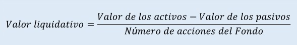

Año 2020
Examen diciembre
- Para poder adecuar la capacidad de ahorro de los clientes a sus objetivos financieros, se debe adecuar:
Aumentando las aportaciones o disminuyendo los objetivos financieros
Aumentando las aportaciones y los objetivos financieros
Reduciendo las aportaciones y manteniendo los objetivos financieros.
Todas las respuestas son correctas.
La respuesta correcta es la d.
- Un Fondo de inversión nos proporciona la siguiente información: Rentabilidad acumulada a tres años del 25,10% y su benchmark, del 21%. Además, sabemos que la beta de fondo fue del 0,95 y su volatilidad del 12%. Si la rentabilidad del activo libre de riesgo es del 0,5%, ¿cuál será el ratio de Sharpe del fondo?
2,05
1,50
0,60
0,07
La respuesta correcta es la c.
Lo primero que tenemos que fijarnos en este ejercicio, es que las rentabilidades que nos dan son acumuladas a tres años. De forma que lo primero que hacemos es analizar estas rentabilidades trianuales. Para ello aplicamos la siguiente equivalencia financiera de tipos de interés.
\[ (1+i_3)=(1+i_1)^3 \]
Donde el subíndice tres indica que es el tipo de interés trianual, y el subíndice con el número uno indica que es el tipo de interés anual. Luego si despejamos el tipo de interés anual, será nuestra rentabilidad:
Haremos este cálculo para las dos rentabilidades, la de la cartera (p) y la del Benchmark (B):
\[ i_1^P=\left(1+0.251\right)^{\frac{1}{3}}-1=0.07750\ (7.75\%) \]
\[ i_1^B\left(1+0.21\right)^{\frac{1}{3}}-1=0.06560 \ (6.56\%) \]
Planteamos el ratio de información,
\[ RI=\frac{\alpha_p}{\sigma_{\alpha,p}} \]
donde tenemos que calcular los datos del numerador (como el alfa de la cartera respecto de su benchmark):
\[ \alpha_p=0.07750-0.95\cdot 0.06560=0.01518 (1.518\%) \]
En este caso, el denominador es el dato que nos dan del TE (5.5%). De forma que si sustituimos el cálculo anterior, en el numerador; y en el denominador, el Tracking error, nos da el siguiente resultado:
\[ RI=\frac{0.0775-0.95\cdot \:0.0656}{0.055}=0.276 \]
- ¿Cuál de los siguientes organismos corresponde al sistema electrónico de negociación de valores de la bolsa española?
La Comisión Nacional del Mercado de Valores (CNMV)
Las Agencias de Valores (AV) y las Sociedades de Valores (SV)
IBERCLEAR
El Sistema de Interconexión Bursátil (SIBE)
La respuesta correcta es la d.
La mayor parte de la negociación de valores que tiene lugar en el mercado bursátil español se hace a través del sistema de interconexión bursátil (SIBE). Existe, no obstante, otra plataforma de negociación (de volumen mucho más reducido) al margen de este sistema, es el denominado corro electrónico (El corro electrónico nace del traspaso hecho en julio de 2009 de los valores de renta variable que cotizaban en los antiguos corros de viva voz a un sistema de contratación electrónica. La contratación se hace entre las 8.30 y las 16.00 en modalidad de fixing).
SIBE: El mercado continuo español es un mercado electrónico que comunica de forma directa a las cuatro plazas españolas (Madrid, Barcelona, Bilbao y Valencia) a través del Sistema de Interconexión Bursátil Español (SIBE) que asegura un único punto de liquidez por valor en tiempo real. Es un mercado dirigido por ordenes, con información en tiempo real en sus pantallas y difusión automática de la información de la contratación.
- Un cliente desea invertir en un plan de pensiones y para ello acude a dos entidades financieras que le ofrecen las siguientes condiciones:
- Entidad A: Se garantiza el 40% de la inversión a 10 años
- Entidad B: Se garantiza el 25% de la inversión a 7 años
¿Por cuál de los dos planes de pensiones se decantará el cliente?
La Entidad A
La Entidad B
Es indiferente ya que las dos entidades ofrecen idéntica rentabilidad
Faltan datos para responder a la pregunta
La respuesta correcta es la a.
En este caso tendremos calcular una capitalización compuesta anualizada para poder establecer un marco de comparación homogéneo. De este modo podremos elegir, a través de un criterio homogéneo, cual de los dos planes le interesa más invertir los recursos.
El plan de la entidad A, nos garantiza un 40%, y para un plazo de 10 años:
\[\left(1+i_A\right)^{10}=\left(1+0.40\right)\:\::\:i_A=0.03421\left(3.42\%\right)\] La rentabilidad anual que daría el plan de pensiones A, vemos que es del 3,42 %.
Pues ahora haremos lo propio, en este caso para el plan de la entidad B. Donde nos garantizan un 25%, y para un plazo de 7 años:
\[\left(1+i_B\right)^{7\:}=\left(1+0.25\right)\:\::\:i_B=0.03239\left(3.24\%\right)\] La rentabilidad anual que daría el plan de pensiones B, vemos que es del 3,24 %.
\[i_A>i_B\] El cliente entonces e decantará por el plan de pensiones de la entidad A, puesto que le ofrece una mayor tasa de rentabilidad anual.
- En la planificación para la jubilación, ¿es necesario prever la cuantía de la pensión de la Seguridad Social que se cobrará cuando llegue el momento de la jubilación?
No es necesario, pues hay mucha incertidumbre sobre su cuantía
Si es necesario, pues servirá para saber las necesidades de ahorro
Si es necesario, aunque no puede, pues no se sabe cuánto se va a cotizar hasta el momento de la jubilación
No es necesario, pues independientemente de la pensión de la seguridad social, es importante ahorrar para cuando llegue la jubilación
La respuesta correcta es la b.
- Pedro ha transmitido en bolsa unas acciones que suscribió hace 10 años, y la operación le ha generado una pérdida patrimonial. ¿Puede integrarse dicha pérdida patrimonial en la base imponible del IRPF si en el plazo de los 5 días siguientes se recompra el mismo número de acciones de la misma empresa?
Sí puede integrar la pérdida, no existe ninguna norma en la Ley del IRPF que se lo impida
No puede integrarse la pérdida porque se han recomprado valores homogéneos en el plazo de los dos meses siguientes a la fecha de transmisión de las acciones
La pérdida podrá integrarse, a elección del contribuyente, en el período impositivo en que se realizó la transmisión que dio lugar a la pérdida o bien en el período impositivo en que se transmitan las acciones recompradas
Todas las respuestas son incorrectas
La respuesta correcta es la b.
- ¿Qué activos financieros pueden ser pignorables en una operación de crédito?
I. Deuda subordinada
II. Acciones
III. Plan de pensiones
IV. PIAS
I, II y III
I, II y IV
II, III y IV
I, II, III y IV
La respuesta correcta es la b.
- Cuál de las siguientes opciones NO es correcta con respecto a la naturaleza de una distribución normal?
La forma de la distribución normal se caracteriza por dos parámetros: la media y la desviación estándar
La curva de distribución normal es simétrica
Aproximadamente dos tercios de las observaciones se encuentran dentro de dos desviaciones estándar a cada lado de la cola
EI 50% de las observaciones se encuentran a ambos lados de la media
La respuesta correcta es la c.
- Las rentas positivas procedentes de la transmisión de una obligación del Estado en el mercado de deuda anotada reciben la siguiente calificación fiscal en el IRPF:
Ganancias patrimoniales
Rendimientos del capital mobiliario derivados de la cesión a terceros de capitales propios
Rendimientos del capital mobiliario derivados de la participación en fondos propios de entidades
Rendimientos de actividades económicas
La respuesta correcta es la b.
- El perdido máximo exigido para obtener la experiencia oportuna para el personal que informa y que asesora sobre productos de inversión es:
De 3 meses en jornada completa
De 6 meses en jornada completa para el personal que informa y de 9 meses en jornada completa para el que asesora
De 6 meses en jornada completa (o equivalente en jornada parcial) para el personal que informa y de 12 meses en jornada completa (e equivalente en jornada parcial) para el que asesora
Ninguna de las respuestas es correcta
La respuesta correcta es la c.
- Indique cuál es el tipo de gravamen aplicable en el Impuesto sobre Sociedades correspondiente al ejercicio 2020:
25%
30%
35%
28%
La respuesta correcta es la a.
- ¿Qué apalancamiento tiene un contrato de valor efectivo 105.000€, valor nominal 104.500€ y depósito de garantía 7.500€?
- 7,14
- 7,50
- 14,00
- 9,50
La respuesta correcta es la c.
- La demanda final es igual a la siguiente expresión:
C + I + G + (Exportaciones - Importaciones)
C + I + G
C + I + G + Exportaciones
Exportaciones - Importaciones
La respuesta correcta es la a.
- Si un producto financiero ofrece una TIR anual del 1,75% significa que:
El tipo de interés que iguala los cobros y pagos del producto es diferente del 1,75% anual
La rentabilidad del producto financiero será del 1,75% anual siempre que los rendimientos se reinviertan en una cuenta vinculada que ofrezca un interés del 0%
La rentabilidad del producto financiero será del 1,75% anual siempre que los rendimientos se reinviertan en una cuenta vinculada que ofrezca un interés del 1,75% anual
El tipo de interés efectivo a un año es del 1,75%
La respuesta correcta es la c.
- En un seguro de vida, cuando el tomador designa irrevocablemente un beneficiario de la póliza:
Debe recabar previamente el consentimiento del beneficiario
Debe recabar previamente el consentimiento de la compañía aseguradora
Pierde, entre otros, el derecho de rescate sobre el seguro
Ha de hacerlo constar en escritura pública notarial, en presencia de la compañía de seguros y del beneficiario
La respuesta correcta es la a.
- El tipo de cambio EUR - CHF es de 1,1055 - 58. Si el CHF experimentara una apreciación del 5% sobre dicho cambio, el contravalor que obtendría en euros un exportador español por una venta en Suiza por importe de 125.000 CHF sería:
99.708,13€
118.988,00€
119.022,00€
107.657,00€
La respuesta correcta es la b.
Si el CHF experimenta una apreciación del 5 % sobre dicho cambio , el contravalor que obtendrá en euros un exportador español por una venta en Suiza por importe de 125.000 CHF seria: \[C_€=\frac{125000}{1.1058\left(0.95\right)}=118989.82399\dots \] En cambio, si el CHF experimenta una depreciación del 5 % sobre dicho cambio, el contravalor que obtendrá en euros un exportador español por una venta en Suiza por importe de 125.000 CHF seria:
dado que el euro se aprecia. En ese caso, sería la respuesta correcta sería la d.
\[C_€=\frac{125000}{1.1058\left(1.05\right)}=107657.45980\dots\]
- Tenemos una Letra del Tesoro comprada en el mercado secundario a un precio de 98,750% faltando 275 días para su vencimiento. Calcular su tipo de interés implícito.
1,103%
1,657%
2,166%
2,095%
La respuesta correcta es la b.
- ¿Cuál de las siguientes opciones es la más correcta para definir una curva de rendimiento con pendiente negativa?
Tipo a plazo < Tipo al contado < TIR
Tipo a plazo > Tipo al contado > TIR
Tipo al contado < TIR < Tipo a plazo
TIR < Tipo a plazo < Tipo al contado
La respuesta correcta es la .
- Un inversor español invierte 1.000 euros en un fondo denominado en dólares canadienses, que tiene una rentabilidad negativa del 20% en el primer año. Si durante ese período la divisa canadiense se aprecia respecto al euro en un 15% ¿cuántos euros tendrá al final del año?
875 euros
525 euros
920 euros
1.625 euros
La respuesta correcta es la c.
- De los siguientes, ¿cuál NO es uno de los principios rectores de los planes de pensiones en España?
No discriminación
Rentabilidad mínima garantizada
Irrevocabilidad de las aportaciones
Integración obligatoria en un fondo de pensiones
La respuesta correcta es la b.
- ¿Cuál de las siguientes afirmaciones describe mejor el ciclo económico caracterizado por una alta tasa de paro y las empresas operando a sus niveles más bajos de capacidad productiva?
a. Expansión
b. Recesión
c. Deflación
d. Pico del ciclo
La respuesta correcta es la b.
- Un contribuyente del IRPF ha percibido las siguientes rentas en el período impositivo:
• 2.000 euros en concepto de intereses de un bono del Estado
• 8.000 euros en concepto de dividendos de una empresa que cotiza en bolsa
• Una pérdida de 15.000 euros como consecuencia del reembolso de un fondo de inversión
¿A cuánto ascenderá su base imponible del ahorro?
-5.000 euros
10.000 euros
7.500 euros
8.000 euros
La respuesta correcta es la c.
- En un depósito mensual con TAE del 2,60% ¿cuánto recibirá un inversor mensualmente si deposita 100.000€ y la tasa de interés nominal es del 2,57%?
260,00 €
216,00 €
200,00 €
214,10 €
La respuesta correcta es la d.
- ¿Cuáles de los siguientes aspectos, generalmente, reducen la tolerancia al riesgo del cliente?
La reducción del horizonte temporal en su esperanza de vida
La ausencia de responsabilidades familiares
El nivel de ingresos
El conocimiento financiero
La l y ll
La II y III
La I
La I, II, III y IV
La respuesta correcta es la c.
- Cuando consideramos el horizonte temporal en relación a la cartera de inversión del cliente, el asesor financiero deberá tener en cuenta que:
a. El cliente siempre fija su horizonte temporal en función de su tolerancia al riesgo
b. El asesor financiero nunca puede establecer un horizonte temporal inferior a 10 años
c. El horizonte temporal es un factor importante a la hora de determinar la asignación de activos de la cartera del cliente
d. El asesor financiero siempre determina el horizonte temporal basado en su visión de mercado
La respuesta correcta es la c.
- Determine el beneficio por acción estimado por el mercado bursátil, de una empresa que cotiza a 97,5 euros con un PER de 18:
a. 4,50
b. 3,90
c. 5,41
d. 4,90
La respuesta correcta es la c.
- Un cliente compró una call europea a la que le queda un mes de vida y se encuentra en situación ITM (in the Money), ¿cómo podría materializar dicho beneficio hoy?
a. Ejerciéndola
b. Vendiendo el subyacente
c. Vendiéndola
d. El beneficio solo lo podre conocer a la fecha de vencimiento
La respuesta correcta es la c.
- ¿De qué depende la evolución futura del gasto social en pensiones?
I. De la evolución demográfica
II. De los incrementos salariales
III. De la evolución del mercado laboral
IV. De la productividad
Seleccione una
a. I y II
b. I, II y IV
c. I, II, III y IV
d. I y II
La respuesta correcta es la c.
- Un inversor adquiere un bono cupón cero emitido por la empresa ABC. ¿Por cuál de los siguientes riesgos estará expuesto el inversor?
Riesgo de precio
Riesgo de amortización anticipada
Riesgo de crédito
Riesgo de reinversión
Seleccione una.
I y III
II y III
I, II y IV
I, III y IV
La respuesta correcta es la a.
- Un aumento en la oferta monetaria provoca que:
Los tipos de interés aumenten, el gasto de inversión disminuya y la demanda agregada se reduzca
Los tipos de interés bajen, el gasto de inversión aumente y la demanda agregada aumente
Los tipos de interés bajen, el gasto de inversión disminuya y la demanda agregada se reduzca
Los tipos de interés aumenten, el gasto de inversión aumente y la demanda agregada aumente
La respuesta correcta es la b.
- Si una economía consume más de lo que produce, ¿cuál de estas afirmaciones es cierta?
a. La inversión es igual al consumo
b. El consumo privado es superior al Producto Interior Bruto
c. La tasa de ahorro nacional es negativa
d. Las importaciones son superiores a las exportaciones
La respuesta correcta es la c.
- Calcula el tipo de cambio forward a 3 meses del EUR/GBP utilizando la siguiente información:
EUR / USD spot: 1,17
GBP / USD spot: 1,30
Tipo de interés a 3 meses EUR: 0,02%
Tipo de interés a 3 meses USD: 0,10%
Tipo de interés a 3 meses GBP: 0,07%
EUR/GBP 1,110
EUR/GBP 0,870
EUR/GBP 0,895
EUR/GBP 0,900
La respuesta correcta es la d.
Calculamos en primer lugar, para conocer el tipo de cambio forward a 3 meses del EUR/GBP, tendremos que calcular cuál es el tipo de cambio spot EUR/GBP, utilizando la información que nos proporciona el enunciado. Para ello tenemos que calcular el tipo de cambio cruzado entre los pares EUR/USD y el GBP/USD:
\[\frac{\frac{EUR}{USD}}{\frac{GBP}{USD}}=\frac{EUR}{GBP}\] \[EUR/GBP=\:\frac{1.17}{1.30}=0.9\]
Para calcular el tipo de cambio forward (a futuro o seguro de cambio) empleamos la siguiente expresión:
\[F_{local/divisa}=S_{local/divisa}\cdot{}\left[\frac{1+i_{divisa}\cdot \frac{n}{base}}{1+i_{local}\cdot \frac{n}{base}}\right]\]
que en nuestro caso queda como sigue:
\[F_{EUR/GBP}=S_{EUR/GBP}\cdot{}\left[\frac{1+i_{GBP}\cdot \frac{3}{12}}{1+i_{EUR}\cdot \frac{3}{12}}\right]\] donde al sustituir y calcular:
\[F_{EUR/GBP}=0.9\cdot{}\left[\frac{1+0.0007\cdot \frac{3}{12}}{1+0.0002\cdot \frac{3}{12}}\right]=0.9001124 \approx0.9\]
- Para analizar la capacidad de ahorro de un cliente, es necesario analizar:
a. EI patrimonio neto personal
b. El Balance de Situación
c. La Cuenta de Resultados
d. El fondo de solvencia
La respuesta correcta es la c.
- Las acciones de la empresa ALFA presentan una Beta del 0,8, y una volatilidad del 12%, mientras que la volatilidad mercado es del 10%. ¿Qué parte del riesgo total de las acciones es riesgo específico?
a. 38,50%
b. 40,25%
c. 55,60%
d. 49,01%
La respuesta correcta es la c.
El riesgo de un activo o una cartera tiene dos componentes: uno debido al mercado, denominado riesgo sistemático; y otro independiente del mercado, denominado riesgo no sistemático o específico. Este último puede reducirse con una adecuada diversificación de los títulos.
- Riesgo total
\[Riesgo\:total\:=\:riesgo\:sistemático\:+\:riesgo\:no\:sistemático\]
- Para un activo:
\[\sigma ^{2\:}_i=\beta _{i^{2\:}}\cdot \sigma _m^{2\:}+\sigma _{U_i}^2\]
Donde:
\(\sigma ^{2\:}_i\): la beta del activo i
\(\sigma _m^{2\:}\) la varianza de la rentabilidad del benchmark (mercado)
\(\sigma _{U_i}^2\) la varianza del término de perturbación
Para una cartera:
\[\sigma ^{2\:}_p=\beta _{p^{2\:}}\cdot \sigma _m^{2\:}+\sigma _{U_p}^2\]
Donde:
\(\sigma ^{2\:}_p\): beta del portfolio (cartera) p
\(\sigma _m^{2\:}\) la beta del portfolio (cartera)
\(\sigma _{U_p}^2\) la varianza del término de perturbación del portfolio (cartera)
De forma que calculamos, a partir del riesgo total para un activo, y resolvemos por la la varianza del término de perturbación, es decir, por aquella parte del parte del riesgo total de las acciones que es riesgo específico y que por tanto sería susceptible de ser eliminado mediante diversificación:
\[\sigma ^{2\:}_i=\beta _{i^{2\:}}\cdot \sigma _m^{2\:}+\sigma _{U_i}^2\] De forma que,
\[0.12^2=0.8^2\cdot \:0.1^2+x^2 => \:\sigma _{U_i}=0.0894427191\]
obtenemos que el riesgo específico de las acciones, que es del 0.0895. Y si ponemos en relación, cuanto supone este 9% del riesgo específico, sobre el riesgo total, que es del 12%, obtenemos:
\[\%\:riesgo\:específico=\frac{0.0895^{2\:}}{0.012^2}\:\approx55.60\%\]
que la parte del riesgo total de las acciones, que es riesgo específico es del 55,60%, medidos ambos riesgos con sus respectivas variazas (y por tanto, cuadráticas estas variables).
- Un director financiero ha colocado 50.000 euros en un E.T.F. (Fondo de inversión Cotizado) en USD, estando el tipo de cambio EUR/USD en el momento de la contratación en 1,15 USD. Transcurrido un año el fondo muestra un valor superior en un 5%. En ese momento el tipo de cambio de la divisa alcanzará 1,1 USD. Calcular la rentabilidad efectiva anual en euros que obtendría
a. +7,130%
b. +13,560%
c. +9,773%
d. -11,360%
La respuesta correcta es la c.
- Un contribuyente del IRPF que tiene un sueldo anual de 30.000 euros ha realizado las siguientes aportaciones a sistemas de a previsión social: 5.000 euros a un plan de pensiones individual 3.000 euros a un plan de previsión asegurado 2.000 euros a un plan de pensiones constituido a favor de su cónyuge, que se encuentra en paro Indique que importe máximo podrá reducir en la base imponible general del IRPF
a. 10.000 euros
b. 8.000 euros
c. 9.000 euros
d. 5.000 euros
La respuesta correcta es la a.
- Tras el fallecimiento de su madre, Santiago heredó unas acciones cotizadas en la bolsa. Las acciones fueron compradas por su difunta madre las ha declarado por un valor de 300.000 euros y Santiago en el Impuesto sobre Sucesiones y Donaciones por un valor de mercado de 350.000 euros ¿Qué renta deberá declarar Santiago en el IRPF si decidiera vender las acciones a un valor de 400.000 euros?
a. Ganancia patrimonial obtenida: 400.000 - 300.000 = 100.000
b. Ganancia patrimonial obtenida: 400.000 - 350.000 = 50.000
c. Ganancia patrimonial obtenida: 400.000
d. Rendimiento del capital mobiliario obtenido: 400.000 - 350.000 = 50.000
La respuesta correcta es la b.
- Teniendo en cuenta que la bolsa tiene una prima de riesgo histórica del 5% y en este momento el mercado de renta variable cotiza con un PER de 14, si la TIR del bono a 10 años está en el 0,5%, ¿cómo está la bolsa?
a. Está infravalorada
b. Está bien valorada
c. Está sobrevalorada
d. No tiene sentido comparar el PER con la TIR
La respuesta correcta es la a.
- Con los datos que se aportan sobre un bono:
Próximo cupón anual = 30-04-2021
Cupón nominal = 2,8%
Amortización a la par y pago último cupón = 30-04-2024
TIR = 3,20%
Fecha valor actual = 30-04-2020
Se pide que calcule cuál será la cotización esperada.
a. 100,000
b. 101,859
c. 98,702
d. 97,114
La respuesta correcta es la c.
- Una empresa manufacturera presenta al descuento comercial una factura de nominal 25.000 euros y vencimiento a 55 días a un 7,2% de descuento comercial. La entidad financiera le aplica una comisión del 0,5%. Calcule la cuantía efectiva que se obtendrá en el momento del descuento.
24.600,00 euros
25.262,12 euros
24.188,21 euros
24.302,35 euros
La respuesta correcta es la a.
- En la demanda de vivienda se pueden encontrar los siguientes tipos:
I. Demanda insolvente
II. Demanda subjetiva
III. Demanda efectiva
IV. Demanda objetiva
- I y II
- II, III y IV
- I, II y IV
- I, II, III y IV
La respuesta correcta es la c.
- En una opción call con precio de ejercicio de 10,5 euros, valor del subyacente 9 euros y la prima pagada de 1,9 euros, ¿cuál es el valor temporal?
0,2
1,9
0,7
0,4
La respuesta correcta es la d.
- Teniendo en cuenta la clasificación de los fondos de inversión por el tamaño de las compañías que lo componen, que afirmación es errónea en relación a los fondos de Small Cap:
La estructura por sectores o estilos es menos importante que la habilidad del gestor para seleccionar las acciones que componen la cartera del fondo
Su comportamiento puede diferir bastante del comportamiento del índice
Intentan añadir valor al fondo concentrando su inversión en un número reducido de compañías
Pueden sufrir más que otro tipo de fondos, en momentos de falta de confianza en el mercado y alta volatilidad, debido al menor tamaño de las compañías que lo componen
La respuesta correcta es la c.
- Un contribuyente del IRPF que sea propietario de un inmueble, distinto de su vivienda habitual, que se encuentre a su disposición durante todos los días del año:
Deberá declarar una renta imputada en la base imponible general del impuesto por un importe igual al 2% del valor catastral del inmueble (o un 1,1% si el valor catastral hubiese sido objeto de revisión en los últimos 10 años)
No deberá declarar rendimiento alguno en el IRPF
Deberá declarar un rendimiento del capital inmobiliario en la base imponible general del IRPF por un importe igual al 2% del valor catastral del inmueble (o un 1,1% si el valor catastral hubiese sido objeto de revisión en los últimos 10 años)
Deberá declarar un rendimiento del capital mobiliario presunto en la base imponible del ahorro por un importe igual al 2% del valor catastral del inmueble (o un 1,1% si el valor catastral hubiese sido objeto de revisión en los últimos 10 años)
La respuesta correcta es la a.
- Un gestor de carteras decide proteger su cartera de renta variable (posición larga o comprada) contra lo que cree que van a ser caídas seguras cotizaciones, ¿qué de las estrategia utilizaría de las seguidamente enunciadas?:
Compra de calls
Venta de futuros
Compra de futuros
Venta de puts
La respuesta correcta es la b.
- ¿Cuál de las siguientes afirmaciones es correcta?
Cuando se quiere sacar del mercado a una compañía que está cotizando, es necesario la realización de una OPA
Un split beneficia al accionista pues recibirá una prima por el derecho a desdoblar las acciones
Una acción genera ingresos únicamente en forma de dividendos
Todas las respuestas son correctas
La respuesta correcta es la a.
- Miguel, que tiene un hijo de 13 años llamado Carlitos, ha suscrito un seguro de vida con cobertura de supervivencia de su hijo con vencimiento a cinco años. Cuando Carlitos alcance la edad de 18 años el seguro le abonará este último una prestación de 25.000 euros, con los que éste hará frente a los gastos de sus estudios universitarios. ¿Deberá tributar Carlitos por algún impuesto cuando cobre la prestación del seguro?
Carlitos deberá tributar en el Impuesto sobre Sucesiones y Donaciones por una adquisición inter vivos
Carlitos deberá tributar en el IRPF, declarando un rendimiento del capital mobiliario en la base imponible del ahorro
Carlitos no deberá tributar por ningún impuesto. El sujeto que manifiesta una capacidad económica gravable es su padre, el tomador del seguro
Carlitos deberá tributar en el IRPF, declarando una ganancia patrimonial en la base imponible del ahorro
La respuesta correcta es la a.
- Dados los siguientes datos de un fondo garantizado:
Plazo: 3 años
Patrimonio inicial fondo: 300 millones de euros
Inversión en bonos cupón cero para garantizar el patrimonio a vencimiento: 270 millones de euros
Comisiones de gestión y otros costes: 8 millones de euros
Prima pagada de 4 euros por opción Call ATM sobre el índice de referencia con nominal de 50 euros
¿Qué porcentaje de participación sobre la revalorización total del índice de referencia podrá ofrecer el fondo garantizado?
91,60%
100,00%
83,50%
50,00%
La respuesta correcta es la a.
- Calcular la tasa de descuento que debería haber en el mercado para que las acciones de una empresa que ha prometido un dividendo constante durante toda su vida de 2,5€, estén cotizando a 31,12€ en el momento actual.
Menor que 9%
10%
Entre 10% y 11%
Mayor que 12%
La respuesta correcta es la a.
- Qué gastos asume el prestatario en una operación de préstamo hipotecario
- Gastos de gestoría
- Gastos de notaría
- Gastos de registro
- No asume ninguno de estos gastos
La respuesta correcta es la d.
- Los mercados en los que se negocian activos financieros a largo plazo, con vencimiento superior a un año, se denominan:
- Mercados monetarios
- Mercados de capitales
- Mercados de futuros y opciones
- Mercados secundarios
La respuesta correcta es la b.
Examen octubre I
- Un inversor que quiere comprar en bolsa 115 acciones de la empresa ABC, da una orden de mercado. El mercado presenta las siguientes órdenes de venta en ese momento: 75 acciones a 8,25 euros y 40 acciones a 8,20 euros. ¿Cómo se le ejecutará dicha orden?
Sólo 75 acciones a 8,25 euros
Nada, o se realiza toda la orden a 8,25 euros o bien el sistema la anula
La totalidad de la orden, 75 acciones a 8,25 y 40 acciones a 8,20 euros
Este tipo de orden no se puede ejecutar en el mercado
La respuesta correcta es la c.
Una orden de mercado es aquella orden que se envía sin precio de compra o venta. No existe límite de precio, y se ejecutará al mejor precio de contrapartida existente, acudiendo al siguiente mejor precio de contrapartida si no hubiera títulos suficientes para cubrir el volumen de la orden; es decir, es una orden que barre posiciones. Por tanto, es probable que la orden se ejecute a diferentes precios, sobre todo si el volumen de títulos que queremos negociar es muy elevado, o en valores poco líquidos. Es una orden adecuada en situaciones donde queremos comprar o vender el valor inmediatamente a cualquier precio, y se trate de un valor suficientemente líquido.
- Ante expectativas de subidas importantes en los tipos de interés, un gestor nos ofrece distintos bonos, todos con la misma TIR. ¿Por cuál de ellos deberá decantarse?
Bono cupón cero a 6 años
Bonos con cupones trimestrales del 6% a 6 años
Bonos de cupones anuales del 6% a 6 años
Por cualquiera de los tres,ya que tiene la misa TIR e igual vencimiento
La respuesta correcta es la: a.
Ante variaciones en los tipos de interés sabemos que los mayores cambios en el precio se dan con:
TIR bajas.
Cupones bajos.
Vencimientos largos.
En otras palabras, seleccionamos el bono de mayor duración (riesgo) de forma que nos ofrecerá una mayor rentabilidad asociada al mayor nivel de riesgo asumido en la inversión.
- En relación a la liquidez, como un objetivo clave de una inversión financiera, indique la característica o propiedad que NO sea correcta:
Es Inversamente proporcional al tiempo que se tarde en convertir en dinero la inversión, sin merma significativa de valor
A mayores comisiones o gastos de reembolso de la inversión, mayor liquidez del activo financiero
La posible perdida de ventajas fiscales con la venta de la inversión va en detrimento de la liquidez
Una inversión que permite antes de su vencimiento liquidar o recuperar una parte es mas liquida que otra que deba venderse en su totalidad
La respuesta correcta es la: b.
- Con los siguientes datos cual sería la capacidad mensual de endeudamiento que aceptaríamos de nuestro cliente Juan sabiendo que tiene unos ingresos brutos anuales de 60.000 euros, retención IRPF 28% y tiene gastos fijos mensuales de un préstamo de 800 euros. Suponga que la capacidad de endeudamiento equivale al 35% del salario neto.
460 euros
1.280 euros
950 euros
3.000 euros si tiene una propiedad libre de cargas
La respuesta correcta es la: a .
\[ CE=\frac{\left(60000\left(1-0.28\right)\right)\cdot \:0.35}{12}-800=460 \]
- Una cartera que replica un índice con un coeficiente beta de 0,9 ha obtenido una rentabilidad del 17% con una volatilidad del 18%, mientras que el índice de referencia tan solo ha obtenido una rentabilidad del 12%, con una volatilidad del 14%. Calcular el tracking-error de dicha cartera.
5,00%
19,33%
12,85%
15,62%
La respuesta correcta es la: c.
\[ TE=\sqrt{0.18^2-0.9^2\cdot \:0.14^2}=0.12854(12,85\%) \]
- Al hacer la valoración de un fondo por medio de un rating, se debe tener en cuenta:
La vocación inversora del fondo
La volatilidad obtenida en el último mes
Las rentabilidades obtenidas en los dos últimos años
La consistencia de sus resultados reantabilidad/riesgo a lo largo del tiempo
Solamente I y III son correctas
Solamente I y IV son correctas
Solamente la IV es correcta
Solamente I y II son correctas
La respuesta correcta es la: b.
El Rating recoge una clasificación cualitativa de los fondos considerando, para cada categoría de fondos, tanto criterios de rentabilidad (posición en el ranking y estabilidad de dicha posición) como de riesgo.
Principales características del sistema de Rating:
· Se agrupan los fondos en función de su categoría. Lógicamente es recomendable comparar fondos que tienen una política de inversión similar y, por tanto, se pueden clasificar dentro de una misma categoría.
· Se calculan mensualmente, durante los tres últimos años, los datos de rentabilidad y volatilidad (desviación típica como medida del riesgo del fondo) a 12 meses.
· Para cada categoría de fondos se le asigna un peso específico a la rentabilidad y a la volatilidad.
· Comparando la evolución conjunta de la rentabilidad-riesgo de cada fondo frente al resto de fondos que integran su categoría, se obtiene el Rating.
· El rating divide en 5 grupos a los fondos tratados, calificando a los mejores fondos de cada categoría con cinco estrellas (*) y a los peores con una estrella.
- Según la rentabilidad, el orden de los siguientes activos (a partir de la tasa de rendimiento más alta) es generalmente el siguiente:
Acciones ordinarias, participaciones en fondos mixtos de renta variable, bonos corporativos, bonos del gobierno
Bonos corporativos, bonos del gobierno, acciones, fondos mixtos de renta variable
Fondos mixtos de renta variable , bonos gubernamentales, bonos corporativos, acciones ordinarias
Bonos del gobierno, fondos mixtos de renta variable,bonos corporativos, acciones ordinarias.
La respuesta correcta es la: a.
- Para analizar la capacidad de ahorro de un cliente, es necesario elaborar y analizar:
El ratio de solvencia
La cuenta de resultados
El ratio de liquidez
El balance de situación
La respuesta correcta es la: b.
- Un cliente invierte 10.000 euros en los siguientes 3 fondos de inversión de renta variable.
| FONDO | COMISIONES | RENTABILIDAD ANUAL |
|---|---|---|
| A | Entrada del 5.5% | 3.50% |
| B | Reembolso del 4% | 4% |
| C | Reembolso del 3.50% | 3.50% |
El Fondo A solo tiene una comisión de entrada. Los Fondos B y C tienen solo comisión de reembolso Al finalizar el plazo de 3 años de inversión. ¿Cuál de los tres fondos habrá obtenido una mayor ganancia?
Fondo A
Fondo B
Fondo
Los tres la misma
La respuesta correcta es la: b.
- Indique cuál de las siguientes bases de legitimación es la correcta cuando una compañía quiere consultar bases de datos externas de solvencia para completar el perfil de sus clientes y ofrecerles productos personalizados en función de la información obtenida de dichas bases de datos externas:
Ejecución de un contrato, ya que el interesado es cliente de la empresa de servicios de inversión
Interés legitimo, ya que prevalecen los intereses del responsable del tratamiento sobre los del interesado
Consentimiento
Ninguna de las afirmaciones es correcta
La respuesta correcta es la: c.
- La mayoría de los inversores son reacios al riesgo, lo que significa que:
Procuran hacer inversiones con el menor riesgo posible
Asumirán más riesgo solo sí son compensados con un mayor retorno esperado
Intentarán de forma activa minimizar el riesgo
Todas las afirmaciones son correctas
La respuesta correcta es la: d.
- Dos analistas comentan la diferencia entre los bonos cupón cero y los Strips. Llegando a las siguientes conclusiones:
Los inversores prefieren los bonos cupón cero debido a su menor sensibilidad al riesgo de tipo de interés
La principal ventaja de los Strips es la liquidez
¿Cual de las afirmaciones hechas por los analistas son correctas?
Solamente laI
Solamente la II
La I y la II
Ninguna de las afirmaciones es correcta
La respuesta correcta es la: b.
- El 1 de marzo de 2027, se compró un bono con cupón del 2,85%. emitido el 1 de marzo de 2026, que vence el 28 de febrero 2030. Si en activos similares el mercado se mueven en rentabilidades del 2,50%, el precio en porcentaje sobre el nominal es aproximadamente:
101,00%
101,75%
102,14%
102,75%
La respuesta correcta es la: a.
- Un banco español negocia un contrato forward a 6 meses con un importador por el cual se compromete a venderle 40 millones de libras a 6 meses a un tipo de cambio de EUR/GBP 0,80 (0,80 libras esterlinas por euro). Si transcurridos los 6 meses el tipo de cambio al contado es de EUR/GBP 0,85 ¿Cuál será el resultado de la operación para el banco?
-2.000.000 €
-2.941.176 €
2.000.000 €
2.941.176 €
La respuesta correcta es la: d.
Para el importador, el cual se compromete a venderle al banco los 40 millones libras a 6 meses a un tipo de cambio de EUR/GBP 0,80, tendrá un pérdida respecto del tipo de contado al vencimiento de,
\[ \left(\frac{1}{0.85}-\frac{1}{0.8}\right)\cdot \:40000000=-2941176.47058 \]
Luego, entendemos que el resultado es favorable para el banco, por ese mismo importe.
- Indique cuál de las siguientes afirmaciones es correcta en relación con las comunicaciones que deben realizarse al SEPBLAC:
Deben comunicarse los cambios de accionariado de los clientes
Deben comunicarse las operaciones sospechosas y las operaciones susceptibles de comunicación sistemática, en su caso.
Debe enviarse el Manual de prevención del blanqueo de capitales y de la financiacion del terrorismo de la empresa de servicios de inversión al SEPBLAC siempre que se modifique
Ninguna de las afirmaciones es correcta
La respuesta correcta es la: b.
- En relación al modelo de valoración de activos CAPM, si la rentabilidad esperada de una acción es igual al 7% y la prima de riesgo del mercado vale 4,5%, ¿cual de las afirmaciones siguientes acerca del riesgo sistemático de la acción es correcta,
La acción presenta un bajo riesgo sistemático
La acción presenta un alto riesgo sistemático
La acción presenta un riesgo sistemático igual al riesgo especifico de la acción.
La información proporcionada es insuficiente para responder la pregunta.
La respuesta correcta es la: d.
- Una cartera de inversiones que incorpore el ciclo de vida del cliente:
Coincidirá exactamente con la actitud del cliente hacia el riesgo
Aumentará su exposición a renta fija en los primeros años
Mantendrá una exposición equilibrada en todas las clases de activos a lo largo de su vida
Reducirá su exposición al riesgo a medida que transcurra el tiempo
La respuesta correcta es la: d.
\[ 40000\left(1-0.05\cdot \frac{45}{360}\right)=39750 \]
- Se sabe que un Bono del Estado tiene una duración de 4,35 años y que su TIR es del 2,54%, ¿cuál será aproximadamente el porcentaje de variación relativa que experimentará el precio del Bono si la TIR aumenta 40 puntos básicos?
-2,30%
-1,69%
+2,30%
+1,69%
La respuesta correcta es la: b.
- En este caso la única “trampa” es que nos dan la Duración y NO la Duración corregida. De forma que bastará dividir la primera entre 1 más la TIR y obtenemos la segunda:
\[\Delta P_0=\frac{-D}{(1+TIR)}\cdot \Delta \ TIR\%=\%\]
\[\Delta P_0=\frac{-4.35}{(1+0.0254)}\cdot \:0.4=-1.69689\%\]
- ¿Cuál es la cuota mensual de un préstamo hipotecario de las siguientes características?
• Importe del préstamo: 70.000€
• Tipo de interés nominal: 1,50%
• Plazo: 10 años
• Sistema de amortización francés
852,89 €
552,12€
628,54 €
752,98 €
La respuesta correcta es la: c.
- Qué característica diferencia a un Fondo de Inversión Inmobiliario de una Sociedad de Inversión Inmobiliaria?
El capital mínimo para la constitución del Fondo es de 9.000.000 euros y el de la Sociedad es de 3.000.000 euros
El mínimo de participes para la constitución del fondo son 100 y para la Sociedad son 25
El Fondo no tiene personalidad jurídica y la Sociedad de Inversión Inmobiliaria sí que la tiene
Todas las afirmaciones son correctas
La respuesta correcta es la: c.
- Una cartera obtuvo una tasa interna de rentabilidad a 3 años del 4,61%. Durante dicho periodo se pagaron los siguientes dividendos:
• Dividendo al final del año 1 = 2,24 euros
• Dividendo al final del año 2 = 2,41 euros
• Dividendo al final del año 3 = 2,58 euros
Si el valor de la cartera al final del periodo fue de 68 euros, ¿cuál fue el valor inicial de la cartera hace 3 años?
55 euros
57 euros
66 euros
58 euros
La respuesta correcta es la: c.
- ¿Por qué impuesto tributa el cobro de una prestación de fallecimiento, en forma de capital, procedente de un seguro de vida en el que el tomador es distinto del beneficiario cuando, además, la condición de asegurado recae sobre un tercero distinto del tomador?
Por el Impuesto sobre la Renta de las Personas Físicas
Por el Impuesto sobre Sucesiones y Donaciones, como una adquisición inter vivos (donación)
Por el Impuesto sobre Sucesiones y Donaciones, como una adquisición mortis causa (sucesión)
Por el Impuesto sobre Sociedades
La respuesta correcta es la: c.
- Una cartera tiene una rentabilidad media del 8,2% y desviación estándar del 1,6% Según dicha información y asumiendo una distribución normal, ¿cuál será el rango esperado de a rentabilidad media con dos desviaciones estándar?
5,0% a 8,2%
5,0% a 11,4%
6,6% a 8,2%
6,6% a 9,8%
La respuesta correcta es la: b.
\[ 0.082+2\cdot \:0.016=0.114(11,4\%) \]
\[ 0.082-2\cdot \:0.016=0.05(5\%) \]
- Supóngase que se posee una opción can sobre las acciones de la sociedad ABC con 40 días de vida residual El precio de etoofelei0 de la opción es de 35 tiros, mientras que el precio de marcado del subyacente es de 37 euros. SI el precio de las acciones de la sociedad ABC disminuye a 30 euros y si se mantienen constantes las demás variables que condicionan el precio de la opción, el valor de la opción.
Aumentará
Disminuirá
Permanecerá invariable pues sigue estando out of the money
Aumentarla o disminuirla según fuera la variación del precio de ejercicio
La respuesta correcta es la: b.
- Una empresa descuenta una letra de cambio de nominal 40.000 euros y vencimiento a 45 días aplicando un descuento comercial del 5%. La cuantía efectiva que percibirá la empresa en el momento del descuento será.
38,258,55 euros
39.750,00 euros
37857,97 euros
38.744,00 euros
La respuesta correcta es la: b.
\[ 40000\left(1-0.05\cdot \frac{45}{360}\right)=39750 \]
- En un contrato de futuros:
El comprador tiene el derecho de comprar y el vendedor la obligación de vender
El comprador tiene la obligación de comprar pero el vendedor tiene el derecho de vender y puede preferir no hacerlo
El comprador tiene la obligación de comprar y el vendedor la obligación de vender
Nadie queda obligado
La respuesta correcta es la: c.
- En condiciones de mercado en equilibrio se sabe que la rentabilidad libre de riesgo es del 0,5%, la rentabilidad esperada de la cartera de mercado es del 9% y su varianza es del 0,0076. ¿Cuál será la pendiente de la CML?
a. 0,42
b. 0,33
c. 0,97
d. 0,53
La respuesta correcta es la: c.
El CAPM (Capital Asset Pricing Model) se puede expresar como la CML (Capital Market Line):
\[E_p=R_f+\left(\frac{E_m-R_f}{\sigma_m}\right)\cdot\sigma_p\]
Donde,
\(E_p\), es la rentabilidad esperada de la cartera \(p\).
\(R_f\), es la rentabilidad del activo sin riego.
\(E_m\), es la rentabilidad esperada de la cartera de mercado.
\(\sigma_m\), es la volatilidad (o riesgo) de la cartera de mercado.
\(\sigma_p\), es la la volatilidad (o riesgo) de la cartera \(p\).
En este caso lo que hacemos es expresar la CML en función de los datos que nos dan. Pero ojo, porque en lugar de darnos el dato directamente de la volatilidad (o riesgo) de la cartera del mercado, nos dan su varianza. Así que no podemos olvidar hacer la raíz cuadrada a la varianza y así obtener así la volatilidad del mercado:
\[E_p=0.005+\left(\frac{0.09-0.005}{\sqrt{0.0076}}\right)\cdot \sigma _p\]
Podemos afirmar así que, la pendiente de la ecuación CML, del modelo de valoración de activos CAPM, es del 0,97 puesto que tras calcular, el resultado obtenemos:
\[\left(\frac{0.09-0.005}{\sqrt{0.0076}}\right)=0.97501\dots \]
- ¿Cuál es el porcentaje máximo de financiación en una operación de leasing mobiliario!
70%
75%
80%
100%
La respuesta correcta es la: d.
- Cuáles de las siguientes afirmaciones explican la diferencia entre un fondo INDEXADO y un ETF?
Los fondos indexados tienden a tener un TER menor y un mayor coste de compra venda para el inversor que los ETF
Los fondos indexados cuentan con clases. los ETF no las tienen.
En los ETF no hay retrocesiones , mientras que en los fondos indexados puede haberlas
La II
La II y la III
La I y la III
La I ,II y III
La respuesta correcta es la: b.
- Un inversor ha comprado una opción put con precio de ejercicio de 61,00 euros. Si el precio al contado del subyacente es de 57,00 euros y la prima de la opción vale 5,00 euros; ¿cuál es el valor temporal de la opción?
5,00 euros
0,00 euros
1,00 euros
4,00 euros
La respuesta correcta es la: c.
- Las sociedades de valores:
Son establecimientos financieros de crédito
Pueden asegurar emisiones de acciones y obligaciones
Canalizan las órdenes de compra y venta de valores hacia la Bolsa
Las alternativas B y C son correctas
La respuesta correcta es la: d.
- ¿Qué son las listas de Iniciados?
Listas de operaciones en las que se ha utilizado información privilegiada
Listas de personas relacionadas con los emisores que tienen acceso a información privilegiada del emisor
Listas de autoridades competentes que supervisan las operaciones sospechosas de abuso de mercado
Ninguna de las afirmaciones es correcta
La respuesta correcta es la: b.
- Utilizando el modelo de Gordon, se ha estimado que el valor teórico de una acción es 36,79. Dado que el dividendo es de 2,5 euros y que la tasa de rendimiento requerida por los accionistas es del 10%, es posible afirmar que la tasa de crecimiento de los dividendos utilizados en el modelo es:
4,10%
3,20%
2,05%
5,00%
La respuesta correcta es la: b.
- Indique cuál de las siguientes afirmaciones es correcta en relación con la clasificación de clientes profesionales:
Los clientes profesionales son las personas físicas que se dedican a una profesión relacionada con los mercados financieros
Los clientes profesionales son aquellos que tienen experiencia inversora previa pero se les tiene que evaluar sus conocimientos y competencias en virtud de la evaluación de idoneidad antes de prestarles el servicio de asesoramiento
Los clientes profesionales son aquéllos a quienes se les presume la experiencia, conocimientos y cualificación necesarios para tomar sus propias decisiones de inversión y valorar correctamente sus riesgos conforme al listado de tipos de clientes que recoge la normativa
Los clientes profesionales no pueden solicitar su trato como clientes minoristas para obtener una mayor protección
La respuesta correcta es la: c.
- Una persona física con residencia fiscal en Japón ha decidido traspasar las participaciones de un fondo de inversión español de renta variable a otro fondo de inversión español de renta fija. ¿Puede beneficiarse la operación del régimen de diferimiento por traspasos?
Sí, en todo caso, por tratarse del reembolso de un fondo de inversión con destino a la suscripción de participaciones en otro fondo de inversión
Sólo si el destino del reembolso es un fondo de inversión
Depende de lo que prevea el convenio de doble imposición celebrado entre España y Japón
No, porque los contribuyentes del Impuesto sobre la Renta de no Residentes no tienen derecho a aplicar el régimen de diferimiento fiscal por traspasos de instituciones de inversión colectiva. Sólo pueden aplicarlo los contribuyentes del IRPF
La respuesta correcta es la: d.
Los contribuyentes por el Impuesto sobre la Renta de No Residentes no tienen derecho a aplicar el régimen de diferimiento de la tributación en caso de traspaso entre fondos de inversión. Por ello, todo reembolso de un fondo tiene la consideración fiscal de ganancia o pérdida patrimonial.
Con carácter general los reembolsos de participaciones están sujetos a una retención del 19% a cuenta del Impuesto sobre la Renta de No Residentes. No obstante, si el partícipe acredita adecuadamente su residencia fiscal en otro Estado mediante certificado original de residencia fiscal en el extranjero emitido por las autoridades fiscales competentes, dependiendo de cuál sea éste, la entidad Gestora estará obligada a efectuar o no una retención.
- Residente en la Unión Europea: Con carácter general, las ganancias patrimoniales derivadas de participaciones de fondos de inversión están exentas de tributación.
- Residente fuera de la Unión Europea: Se tendrá en cuenta la existencia de convenios para evitar la doble imposición que pudieran existir entre España y el país del no residente, siempre y cuando, el certificado de residencia fiscal en el extranjero que aporte el partícipe haga mención expresa a la residencia conforme al convenio. De no ser así, las ganancias patrimoniales se gravarán al tipo general del 19%.
- ¿Cuál de las siguientes afirmaciones es cierta?
Al aumentar la Base Monetaria, la oferta monetaria disminuye en una cantidad mayor.
Al aumentar la Base Monetaria, la oferta monetaria aumenta en la misma cantidad.
Al aumentar la Base Monetaria, la oferta monetaria aumenta en una cantidad mayor
Al aumentar la Base Monetaria, la oferta monetaria aumenta en una cantidad mayor siempre y cuando el coeficiente de reservas sea inferior al 5%
La respuesta correcta es la: c.
En primer lugar, la oferta monetaria es mayor que la base monetaria, ya que incluye el dinero bancario, es decir, el dinero generado como consecuencia de la capacidad de creación de dinero por parte de los bancos comerciales.
- Cuales son los indicadores adelantados (LEADING INDICATORS?
La construcción de viviendas
El empleo y la construcción de viviendas
Los pedidos de bienes duraderos
La confianza del consumidor
La respuesta correcta es la: d.
- ¿Por qué valor se declaran los bienes inmuebles en el Impuesto sobre el Patrimonio?
Por su valor contable
Por el valor catastral
Por el valor de mercado
Por el mayor de tres valores: el valor catastral, el valor de adquisición o el valor comprobado por la Administración tributaria a efectos de otros tributos
La respuesta correcta es la: d.
Los bienes inmuebles de naturaleza urbana o rústica, se computarán tomando como referencia el mayor valor de los tres siguientes:
El valor catastral consignado en el recibo correspondiente a 2019 del Impuesto sobre Bienes Inmuebles.
El valor comprobado por la Administración a efectos de otros tributos, como, por ejemplo, el Impuesto sobre Transmisiones Patrimoniales y Actos Jurídicos Documentados o el Impuesto de Sucesiones y Donaciones.
El precio, contraprestación o valor de adquisición. En relación con estos términos, debe precisarse que el precio se refiere a las operaciones de compraventa, la contraprestación a las permutas y el valor de adquisición a los supuestos de sucesiones o donaciones.
- Un depósito creciente a 18 meses, que los primeros seis meses dé un interés nominal del 0,75%, los siguientes seis meses remunere al 1,00% y los últimos seis meses al 1,25% tendrá una TAE de:
1,00%
1,24%
1,3%
1,65%
La respuesta correcta es la: a.
Podemos plantear una equivalencia financiera:
\[\left(1+TAE\right)^{1.5}=\left(1+i_{2,\:1}\right)^1\cdot \left(1+i_{2,\:2}\right)^1\cdot \left(1+i_{2,\:3}\right)^1\]
en donde los tipos de interés nominales ( \(j(m)\) ) de cada uno de los tres semestres ( \(m=2\) ), lo convertimos a un tipo de interés efectivo semestral ( \(i_{2, \ n}\) ). Para ello recordemos la relación que existe entre los tipos de interés nominales y efectivos:
\[i_m=\frac{j(m)}{m}\]
luego, para cada uno de los tres trimestres tendremos que:
\[i_{2, \ 1}=\frac{0.0075}{2}=0.00375\]
\[i_{2, \ 2}=\frac{0.01}{2}=0.005\]
\[i_{2, \ 3}=\frac{0.0125}{2}=0.00625\]
Ahora, sustituimos en la equivalencia que hemos planteado
\[\left(1+TAE\right)^{1.5}=\left(1+0.00375\right)\cdot \left(1+0.005\right)\cdot \left(1+0.00625\right)\]
y, resolvemos por la TAE
\[TAE=0.01002(1\%)\]
Nota: elevamos la TAE a 1.5 ya que se trata de 18 meses de inversión, como la TAE es anual, la corregimos de este modo. Nótese que también se podrían convertir los tipos nominales a anuales en lugar de hacerlos semestrales, pero por simplicidad hemos preferido hacerlo de este modo, tomando los tipos efectivos semestrales y corrigiendo la TAE con el 1.5 en el exponente.
- Esther, una contribuyente del IRPF, ha transmitido al mercado los derechos de suscripción preferente que le correspondían en una ampliación de capital liberada. ¿Qué tributación corresponde en el IRPF al importe obtenido por la venta de los derechos de suscripción preferente?
El importe obtenido está exento de gravamen
El importe obtenido reduce el valor de adquisición de las acciones
El importe obtenido está sujeto a gravamen bajo la calificación fiscal de rendimiento del capital mobiliario, sin retención a cuenta
El importe obtenido está sujeto a gravamen bajo la calificación fiscal de ganancia patrimonial, con retención a cuenta que deberá practicar, como regla general, la entidad depositaria de las acciones
La respuesta correcta es la: d.
- Un inversor que decide optar por la gestión pasiva buscará fondos que:
Tengan un bajo tracking-error
Fondos con Beta cercana a 1
Fondos con baja Alfa
Alfa de jensen mayor que 1
Solamente la II
La II y la III
La I, II y IV
La I, II y III
La respuesta correcta es la: d.
- Para implementar una política fiscal expansiva, el gobierno debería:
Aumentar el gasto público
Ralentizar el crecimiento del gasto de consumo de los hogares
Aumentar la tasa impositiva
Reducir el gasto público
La respuesta correcta es la: a.
- Suponga que tiene una cartera de opciones sobre el IBEX-35 compuesta por las opciones que se detallan más abajo. Si hoy el IBEX-35 está cotizando a 9.275 puntos, ¿cuáles de sus opciones están “in”, “out” y “at the money”?
Una call con precio de ejercicio 8.250 y vencimiento dentro de 6 meses
Una call con precio de ejercicio 9.500 y vencimiento dentro de un año
Una put con precio de ejercicio 9.550 y vencimiento dentro de 6 meses
I. In the money, II. In the money, III. In the money
I. In the money, II. Out of the money, III. In the money
I. In the money, II. Out of the money, III. Out of the money
I Out of the money, II. Out of the money, III. Out of the money
La respuesta correcta es la: b.
En este caso tenemos que calcular cuál de las siguientes opciones, para el nivel de subyacente que nos indican, posee valor intrínseco.
De forma que lo calculamos para una Call, posición alcista:
\[VI_c = \text{Precio del subyacente} – \text{Precio de ejercicio}\] \[VI_C=9.275-8.250>0=>ITM\] \[VI_C=9.275-9.500>0=>ITM\] Calculamos también el Valor intrínseco para una Put. Tenemos que fijarnos que en este caso es el contrario del anterior, ya que la posición es bajista:
\[VI_P = \text{Precio de ejercicio} – \text{Precio del subyacente}\]
\[VI_P=9.550-9.275->0=>ITM\] De forma que las tres tienen valor intrínseco. Por lo tanto podemos afirmar que las tres se encuentran “in the Money” o, en dinero.
- Determine el beneficio por acción estimado por el mercado bursátil, de una empresa que cotiza a 97,5 euros con un PER de 18
4,50
3,90
5,41
4,90
La respuesta correcta es la: c.
- En una opción de compra (call) europea:
Su valor al vencimiento es igual a la volatilidad del precio del subyacente
Su valor al vencimiento depende de la evolución de los precios de ejercicio y de la volatilidad
Su valor al vencimiento depende de la evolución de los precios del subyacente
Su valor al vencimiento depende del vicio final del subyacente
La l y la ll
La II
La
La IV
La respuesta correcta es la: d.
- Si como resultado de un cambio en el ciclo económico, el gobierno español decide implementar una política fiscal expansiva, el asesor financiero deberá recomendar a su cliente:
Comprar acciones de compañías que generen la mayoría de sus ingresos fuera de España
Comprar acciones que se dediquen a proyectos de infraestructura local
Vender acciones de utilities debido a que sus ingresos están vinculados a la inflación
Comprar empresas del sector financiero
La respuesta correcta es la: b.
- Considere una cartera compuesta de dos valores con desviación estándar del 5% y 7%, respectivamente. En el caso de una correlación de 0,8, la desviación estándar de los rendimientos de la cartera seria:
5,30%
6,00%
5,70%
6,10%
La respuesta correcta es la: c.
- Indique cuál de las siguientes respuestas es correcta en relación con el hecho de que una empresa de servicios que ofrece el servicio de gestión de carteras perciba retrocesiones de comisiones de terceros y las retenga:
La empresa de servicios de inversión podrá retener dichas retrocesiones de comisiones a condición de informar a su cliente d la percepción de las citadas retrocesiones.
La empresa de servicios de inversión deberá devolver las citadas retrocesiones de comisiones percibidas de terceros tan pronto como sea razonablemente posible tras su recepción
La empresa de servicios de inversión podrá retener dichas retrocesiones de comisiones a condición de informar de ello a la CNMV
La empresa de servicios de inversión podrá justificar mantener las retrocesiones siempre que justifique una mejora en la prestación del servicio de gestión discrecional de carteras a su cliente
La respuesta correcta es la: d.
La empresa de servicios de inversión podrá justificar mantener las retrocesiones siempre que justifique una mejora en la prestación del servicio de gestión discrecional de carteras a su cliente
- ¿Cuál de las siguientes características de un fondo garantizado NO es correcta?
Están compuestos por una opción OTC
Pueden tener en un determinado supuesto fiscalidad diferente al resto de los fondos de inversión
Cuando vence el periodo de garantía pueden iniciar un nuevo periodo de garantía modificando su naturaleza
Todas las respuestas son correctas
La respuesta correcta es la: a.
- Los intereses procedentes de depósitos bancarios con rentabilidad indiciada a valores de renta variable, en los que no existe riesgo de pérdida del importe depositado.
Tributan como ganancia de patrimonio
No determinan la obtención de rentas tributables en la fecha de vencimiento
Están exentos
Tributan como rendimientos del capital mobiliario
La respuesta correcta es la: d.
Examen octubre II
- Un contribuyente del IRPF que haya percibido cupones procedentes de una emisión de obligaciones bonificadas realizada por una empresa concesionaria de autopistas de peaje …
- Disfrutará de una exención plena por el importe total de los citados cupones
- Soportará una retención a cuenta al porcentaje actualmente vigente del 19%
- Soportará una retención efectiva a cuenta del 1,2% y recuperará en la cuota líquida de su declaración del IRPF una retención teórica del 24%.
- Disfrutará de una exención del 50% del importe de los citados cupones
Respuesta correcta: c.
Las obligaciones bonificadas fiscalmente son una modalidad especial de obligaciones que gozan de una excepcional rentabilidad financiero-fiscal, pues conjugan la normal percepción de intereses con determinados beneficios fiscales. En concreto, el beneficio fiscal del que goza este activo, basado en el respeto a la existencia de derechos adquiridos, consiste en el mantenimiento de una bonificación del 95%, del régimen de retenciones originalmente aplicable.
En el cobro de un cupón de una obligación bonificada se aplica la retención que estaba en vigor a efectos del derogado Impuesto sobre las Rentas del Capital (IRC), esto es, un 24%, pero bonificada en un 95%, con lo que la retención efectivamente soportada es de un 1,2%.
Al realizar la declaración del IRPF el contribuyente deduce en su declaración la cuantía íntegra del IRC que hubiese procedido en el caso de no existir la bonificación, es decir un 24 % del importe íntegro del cupón.
- ¿Cuál de los siguientes aspectos es probable que tenga mayor impacto en las recomendaciones estratégicas a largo plazo que el asesor financiero realiza a su cliente?
- Un aumento en el tipo impositivo
- Un terremoto
- La tolerancia del cliente a la volatilidad en el corto plazo
- Un aumento en el tipo de cambio del euro
Respuesta correcta: a.
- Una entidad financiera ofrece una imposición a plazo fijo a 5 años y un interés del 2,15% anual con pago de intereses trimestrales, que se van acumulando para, al finalizar el plazo retirar el total. Prescindiendo de la influencia de las comisiones, la TAE asociada es:
- No puede existir la TAE en un producto cuyo vencimiento sea superior a un año.
- 4,577%
- 2,167%
- 3,532%
Respuesta correcta: c.
- Una persona física residente fiscal en España es titular de los siguientes bienes y derechos a 31 de diciembre:
- Una vivienda habitual, valorada a efectos del Impuesto sobre el Patrimonio en 450.000 euros
- Una cartera de fondos de inversión, valorada a efectos del Impuesto sobre el Patrimonio en 350.000 euros
- Una cartera de acciones cotizadas, valorada a efectos del Impuesto sobre el Patrimonio en 200.000 euros
- Efectivo en cuentas corrientes valorado a efectos de este impuesto en 100.000 euros
- Una embarcación de recreo valorada a efectos del Impuesto sobre el Patrimonio en 100.000 euros
¿A cuánto ascenderá la base liquidable del Impuesto sobre el Patrimonio?
- 500.000 euros
- 200.000 euros
- 1.200.000 euros
- 700.000 euros
Respuesta correcta: b.
- Un producto NO complejo:
- Pueden incluirse cláusulas que puedan alterar la naturaleza o el riesgo de la inversión o perfil de pagos, siempre que sea aceptado por el cliente.
- Pueden incluirse cláusulas que puedan alterar la naturaleza o el riesgo de la inversión o perfil de pagos
- No pueden incluirse cláusulas que puedan alterar la naturaleza o el riesgo de la inversión o perfil de pagos
- Todas las respuestas son incorrectas
Respuesta correcta: c.
- Un bono tiene una sensibilidad de 4,73 y ante un aumento de los tipos de interés de 35 puntos básicos su precio pasa a ser 107,15%. ¿Cuál era el precio de dicho bono antes d que tuviese lugar dicha variación de tipos de interés?
- 110,87%
- 106,35%
- 111,88%
- 108,80%
Respuesta correcta: d.
Para resolver esta pregunta planteamos la sensibilidad del precio de un bono ante cambios de la TIR
\[P_1-P_0\simeq (-S)\cdot\Delta TIR\]
donde,
\(P_1\), es el precio estimado del bono ante una variación de la TIR.
\(P_0\), es el precio actual del bono .
\(S\), es la sensibilidad o sensibilidad absoluta.
\(\Delta TIR\), variación porcentual de la TIR.
donde, al sustituir los datos del enunciado tenemos que,
\[107.15-P_0\simeq \:\left(-4.73\right)\cdot 0.35\%\] y, si despejamos \(P_0\),
\[107.15-P_0=\left(-4.73\right)\cdot \:0.35\quad :\quad P_0=108.8055\]
- Un fondo por compartimentos:
- Le permite al partícipe cambiar más fácil entre un tipo de fondo y otro, es decir, facilita los traspasos entre fondos
- Genera economías de escala, pues los gastos del fondo son compartidos por partes iguales entre los compartimentos que lo componen
- Facilita la emisión de diferentes clases de participaciones
- Ninguna de las respuestas es correcta
Respuesta correcta: c.
- En el entorno de altos niveles de inflación y bajo crecimiento del PIB, de los siguientes activos, ¿en cuál resulta más conveniente invertir?
- Bonos del Tesoro
- Depósitos
- Divisas
- Commodities
Respuesta correcta: d.
- La cotización de una acción con PER = 25 y unos beneficios por acción estimados de 1,5 euros, será:
- 16,00 euros
- 37,50 euros
- Dependerá del pay-out
- 30,00 euros
Respuesta correcta: b.
Si partimos de la relación del PER, \[PER=\frac{P_0}{BPA}\] \[25=\frac{P_0}{1.5}=>P_0=37.5\]
- Dos acciones A y B presentan una desviación típica anual con respecto a su rentabilidad igual, respectivamente, al 12% y al 18%, así como un coeficiente de correlación entre rentabilidades igual a 1. ¿Cuál será la desviación típica de una cartera que contuviera ambos títulos igualmente ponderados?
- 12%
- 0%
- 15%
- 14%
Respuesta correcta: c.
- Para reducir la inflación, qué medida debería tomar la Reserva Federal:
- Ampliar la oferta monetaria para aumentar las tasas de interés, lo que aumenta la inversión
- Ampliar la oferta monetaria para reducir las tasas de interés, lo que aumenta la inversión
- Reducir la oferta monetaria con el fin de reducir las tasas de interés, lo que aumenta la inversión d. Reducir la oferta monetaria para aumentar los tipos de interés, lo que disminuye la inversión
Respuesta correcta: d.
- Una empresa desea saber la TAE de un préstamo de 35.000 euros que hay que devolver al año de su concesión mediante un solo pago pactado a un tanto nominal del 2,20%, con una misión de apertura del 0,40%. ¿Cuál es esta TAE?:
- 2,26%
- 2,82%
- 3,50%
- 2,61%
Respuesta correcta: d.
- Un inversor ha colocado 50.000 euros en un E.T.F. (Fondo de inversión Cotizado) en USD, estando el tipo de cambio EUR/USD en el momento de la contratación en 1,15 USD. Transcurrido un año el fondo ha incrementado su valor en un 5%. En ese momento el tipo de cambio de la divisa alcanzará 1,1 USD. Calcular la rentabilidad efectiva anual en euros que obtendría ese inversor.
- 7,130%
- 13,560%
- 9,773%
- -11,360%
Respuesta correcta: c.
- A la hora de escoger un fondo de inversión mobiliaria, si el aspecto que más preocupa es conocer la relación entre el diferencial de rentabilidad de un fondo sobre su índice de referencia y el riesgo asumido por el gestor en la relación al índice de mercado ¿qué ratio será más útil?
- Ratio de sharpe
- Ratio de Treynor
- Ratio de Información
- Alfa de tensen
Respuesta correcta: c.
- Con referencia a un fondo de inversión, ¿puede el alfa de Jensen coincidir con el Tracking error?
- Sí, es posible si el factor de riesgo sistemático del fondo es igual a 1.
- Sí, en todos los casos en los que un fondo tenga un ratio de información positivo es
- No, nunca puede suceder porque la determinación del alfa de Jensen se refiere al modelo CAPM mientras que la del error de seguimiento no
- Sí, casi siempre lo hace
Respuesta correcta: a.
- Un trabajador autónomo descuenta una factura comercial de nominal 25.000 euros y vencimiento a 55 días a un 7,2% de descuento comercial. Si se le aplica una comisión del 0,5%, la cuantía efectiva que percibirá ese profesional en el momento del descuento será:
- 24.600,00 euros
- 25.262,12 euros
- 24.188,21 euros
- 24.302,35 euros
Respuesta correcta: a.
- la rentabilidad esperada por el mercado para el próximo año es del 12%. El activo libre de riesgo es del 1% y la acción Zeta tiene una beta un 25% mayor que la del mercado. ¿Cuál será la rentabilidad exigida de la acción Zeta para el próximo año?
- 14,75%
- 16,20%
- 18,20%
- 15,10%
Respuesta correcta: a.
- Calcular el tipo de interés implícito de una Letra del Tesoro comprada en el mercado secundario a un precio de 98,750% faltando 275 días para su vencimiento.
- 1,103%
- 1,657%
- 2,166%
- 2,095%
Respuesta correcta: b.
Calculamos el precio de una letra hasta un año (capitalización simple) como:
\[P_0=\frac{100}{\left(1+i\cdot\frac{d}{360}\right)}\]
donde,
\(P_0\), es el precio de la letra, expresado en porcentaje sobre el nominal.
\(i\), es el tipo de interés en tantos por uno.
\(d\), es el número de días que ha mantenido el inversor la letra en su poder.
\[98.75=\frac{100}{\left(1+i)\frac{275}{360}\right)}; \ \ i=0.01657(1,657\%)\]
- El objetivo principal del modelo de descuento de dividendos es:
- Individualizar la política de distribución de los beneficios de la firma
- Estabilizar el valor del patrimonio neto de la firma
- Estimar el valor teórico de una acción para verificar si el título se halla infravalorado o sobrevalorado en el mercado
- Determinar ex-ante la rentabilidad esperada de una acción
Respuesta correcta: c.
- ¿Cuál de estas afirmaciones es correcta en una novación de préstamo hipotecario?
- Se puede modificar el tipo de interés
- Se pueden modificar los requisitos de bonificación
- Si se modifica el plazo, la novación tiene una exención en el impuesto sobre Actos Jurídicos Documentados
- Todas las respuestas son correctas
Respuesta correcta: d.
- Un asesor financiero es requerido para indicar el precio entero (precio efectivo) de un bono del Estado el día 18/12/2021. Los datos que tiene a su disposición indican que la cotización (precio ex cupón) será 101,5%, que pagará cupones constantes anuales del 3,10% y que su vencimiento será el día 31/01/2025.
- 101,661%
- 98,461%
- 101,275%
- 104,226%
Respuesta correcta: d.
\[P_{entero}=P_{ex-cupon}+CC\]
\[P_{entero}=P_{ex-cupon}+C\cdot \frac{d}{365}\]
\[P_0=101.5+3.1\cdot \frac{321}{365}=104.22630\%\]
- ¿Cuáles de las siguientes afirmaciones sobre las hipótesis de la inmunización son correctas?
- I La duración supone que la curva de rendimiento no es plana
- II La duración supone que los desplazamientos en la curva de rendimientos siempre son paralelos
- III La inmunización sólo es válida para pequeñas variaciones en los tipos de interés
- IV La duración y el horizonte temporal varían en la misma proporción que el paso del tiempo
- Solo la IV
- Solo la I y II
- Solo la II y la III
- Solo la II y la IV
Respuesta correcta: c.
- En cuanto a las estrategias utilizadas por las Instituciones de Inversión Colectiva de Inversión Libre (IICIL) - hedge fund la estrategia Global Macro:
- Es una estrategia de valor relativo
- Es una estrategia de fondos de futuros
- Es una estrategia de oportunidad
- Es una estrategia de eventos societarios
Respuesta correcta: c.
- En el proceso de planificación financiera personal, en la fase de recogida de información del diente, se debe tener en cuenta lo siguiente:
- Recopilación de información sobre la situación financiera del cliente en términos de inversión, pero no en términos de deuda
- Recopilación de información sobre el capital del cliente y su situación financiera, pero no la de su núcleo familiar
- Analizar y comprender los objetivos personales de los clientes relacionados con su ciclo de vida
- Las rentabilidades y volatilidades de los activos que componen el mercado
Respuesta correcta: c.
- Para una correcta planificación de la jubilación se debe tener en cuenta:
- La capacidad de ahorro actual
- El monto que tendrán las pensiones públicas en el momento de la jubilación
- Conocer el patrimonio neto actual
- Todas las opciones con correctas
Respuesta correcta: d.
- Las empresas de servicios de inversión que pueden operar tanto por cuenta propia como ajena se denominan:
- Sociedades gestoras de cartera
- EAF
- Sociedades de Valores
- Agencias de Valores
Respuesta correcta: c.
- La compra de una opción call europea otorga a su poseedor:
- La obligación a vender un determinado subyacente a un precio prefijado y en una determinada fecha futura
- El derecho a su propietario a comprar un determinado subyacente a un precio prefijado y en una determinada fecha futura
- La obligación a vender un determinado subyacente a un precio prefijado y en cualquier momento de la vida de la opción hasta su vencimiento
- El derecho a su propietario a vender un determinado subyacente a un precio prefijado y en una determinada fecha futura
Respuesta correcta: b.
La compra de una opción call europea otorga a su poseedor, por definición, el derecho a su propietario a comprar un determinado subyacente a un precio prefijado y en una determinada fecha futura.
- Indique cuál de las siguientes respuestas es correcta en relación con el concepto de incentivos:
- Tendrán la consideración de incentivos aquellos importes que se distribuyan por medio de un dividendo o cualesquiera otros pagos entre entidades del mismo grupo que se correspondan con pagos por la distribución de instrumentos financieros
- Tendrán la consideración de incentivos aquellos importes que se distribuyan por medio de un dividendo o cualesquiera otros pagos entre entidades del mismo grupo
- Tendrán la consideración de incentivos aquellos importes que se distribuyan por medio de un dividendo o cualesquiera otros pagos entre entidades del mismo grupo que se correspondan con pagos por la distribución de instrumentos financieros, estando en todo caso prohibidos
- Tendrán la consideración de incentivos aquellos importes que se distribuyan por medio de un dividendo o cualesquiera otros pagos entre entidades del mismo grupo que se correspondan con pagos por la distribución de instrumentos financieros, pudiendo en todo caso mantenerse siempre que se justifique una mejora en la calidad del servicio al cliente
Respuesta correcta: d.
- Una sociedad limitada ha obtenido en el presente ejercicio un resultado contable de 2.500.000 euros. Indique a cuánto ascenderá la base imponible del Impuesto sobre Sociedades, teniendo en cuenta las siguientes circunstancias:
- Entre los gastos registrados en la contabilidad se encuentran 100.000 euros, en concepto de sanciones derivadas de un expediente administrativo
- Entre los ingresos contables se encuentran registrados 250.000 euros en concepto de dividendos procedentes de una filial residente en España e íntegramente participada cuyas acciones fueron adquiridas hace tres años
- Las sanciones no son un gasto fiscalmente deducible. Base imponible = 2.500.000 +100.000 = 2.600.000 b. La base imponible coincide con el resultado contable. e imponible = 2.500.000
- Las sanciones no son un gasto fiscalmente deducible y los dividendos procedentes de la filial pueden disfrutar de una exención por doble imposición al 100%. imponible = 2.500.000 +100.000 - 250.000 = 2.350.000
- Base imponible = 2.500.000 x 25% = 625.000
Respuesta correcta: c.
- Samuel se reunió con su asesora financiera Eva para hablar sobre sus necesidades y preocupaciones financieras. Samuel se negó a proporcionar detalles de sus ingresos. ¿Cómo debería reaccionar Eva?
- Ofrecer únicamente los productos en que Samuel está interesado
- Ofrecerle asesoramiento sobre la base de ejecución
- Registrar que Samuel se negó a proporcionar detalles sobre sus ingresos
- Eva debería negarse a ofrecer cualquier tipo de asesoramiento
Respuesta correcta: c.
- Indique la rentabilidad geométrica anualizada que ofrece una inversión que proyecta los siguientes flujos de caja anuales:
| Años | Inicio de la inversión | Fin de la inversión |
|---|---|---|
| 1 | 300 € | 210 € |
| 2 | 150 € | 120 € |
| 3 | 100 € | 110 € |
- -16,400%
- -18,370%
- 26,670%
- -14,914%
Respuesta correcta: d.
En primer lugar calcularemos las rentabilidades simples de cada subperiodo,
\[R_1=\frac{210-300}{300} \ ;\ R_1=-0.3\] \[R_2=\frac{120-150}{150} \ ; \ R_2=-0.2\]
\[R_3=\frac{110-100}{100} \ ; \ R_3=0.1\] para luego calcular la TGR,
\[TGR_{\ 1,\ 3}=\left(\left(1+RS_1\right)\cdot\left(1+RS_2\right)\cdot\left(1+RS_3\right)\right)^{1/3}-1\]
que nos da un resultado de,
\[TGR_{\ 1,\ 3}=\left(\left(1-0.3\right)\left(1-0.2\right)\left(1+0.1\right)\right)^{\frac{1}{3}}-1=-0.14913(\approx -14,914\%)\]
- Calcula el tipo de cambio forward a 6 meses del EUR/GBP utilizando la siguiente información:
EUR/USD spot: 1,1145
GBP/USD spot: 1,4639
Tipo de interés a 6 meses EUR: 0,14%
Tipo de interés a 6 meses USD: 0,97%
Tipo de interés a 6 meses GBP: 0,61%
- EUR/GBP 0,7585
- EUR/GBP 0,7630
- EUR/GBP 1,6376
- EUR/GBP 1,6315
Respuesta correcta: b.
Lo primero que haremos en este caso será el tipo de cambio cruzado para obtener el euro libra:
\[\frac{\frac{EUR}{USD}}{\frac{GBP}{USD}}=\frac{EUR\cdot \:USD}{USD\cdot \:GBP}=\frac{EUR}{GBP}\] de manera que obtenemos el tipo spot para 1 € expresado en libras esterlinas:
\[EUR/GBP =\frac{1.1145}{1.4639}:\quad EUR/GBP \ 0.76132\]
ahora aplicamos el tipo spot, para obtener el tipo forward teniendo en cuenta, eso sí los tipos de interés de la moneda base y de la divisa, así como el plazo:
\[F_{local/divisa}=S_{local/divisa}\cdot{}\left[\frac{1+i_{divisa}\cdot \frac{n}{base}}{1+i_{local}\cdot \frac{n}{base}}\right]\]
de manera que al calcular tenemos que el tipo a plazo o forward será de:
\[F_{EUR/GBP}=0.76132\cdot \frac{1+0.0061\cdot \frac{6}{12}}{1+0.0014\cdot \frac{6}{12}}=0.76310\]
- Una determinada opción call tiene un precio de ejercicio de 40,00€ y el valor de la prima es de 4,25€. Si la acción está cotizando actualmente en el mercado a 38,00€ ¿cuál de las siguientes afirmaciones será cierta?
- El valor intrínseco es de 2,00€
- El valor temporal es de 2,00€
- Su valor intrínseco será de 7,25€
- Su valor temporal será de 4,25€
Respuesta correcta: d.
- Calcular la cuota de amortización por el método francés de un préstamo con las siguientes características:
- Capital inicial: 15.000 euros
- Plazo de amortización: 3 años
- Periodos de amortización al año: 12
- Tipo de interés fijo: 10%
- 500,00 euros
- 484,01 euros
- 541,66 euros
- 458,33 euros
Respuesta correcta: .
- Indique cuál de las siguientes afirmaciones sobre los planes de pensiones NO es correcta:
- Los planes de pensiones han de integrarse de forma obligatoria en un fondo de pensiones
- Los planes de pensiones se instrumentarán mediante sistemas financieros y actuariales de capitalización
- Los derechos económicos en un plan de pensiones pueden ser rescatados, en cualquier caso, antes del acaecimiento de las contingencias cubiertas
- El acceso a un plan de pensiones está garantizado a cualquier persona física que reúna las condiciones de vinculación o de capacidad de contratación
Respuesta correcta: c.
- Un contribuyente del IRPF ha obtenido las siguientes rentas en el presente ejercicio:
- Ganancias patrimoniales procedentes de la venta de acciones cotizadas: 4.000 euros
- Pérdidas patrimoniales derivadas del reembolso de participaciones en un fondo de inversión: -8.000 euros
- Rendimientos del capital mobiliario derivados del cobro de dividendos procedentes de acciones cotizadas: 10.000 euros
¿A cuánto ascenderá la base imponible del ahorro del IRPF de este contribuyente?
- 6.000 euros
- 10.000 euros
- 7.500 euros
- 14.000 euros
Respuesta correcta: c.
- D. Fernando es un contribuyente del IRPF que mantiene invertidos 100.000 euros en bonos emitidos por la empresa ALFA, que cotizan en el mercado AIAF de renta fija.
¿Qué tratamiento fiscal resultaría aplicable en el IRPF a una eventual conversión de los citados bonos por acciones de la empresa ALFA, cuyo valor de cotización en la fecha de la conversión ascendería a 125.000 euros?
- Como consecuencia de la conversión, D. Fernando declararía una ganancia patrimonial de 25.000 euros
- Como consecuencia de la conversión, D. Fernando declararía un rendimiento del capital mobiliario de 25.000 euros.
- La conversión de bonos y obligaciones en acciones no se encuentra sometida a gravamen en el IRPF, D. Fernando no declararía renta alguna
- Corno consecuencia de la conversión, D. Fernando declararía un rendimiento del capital mobiliario de 125.000
Respuesta correcta: b.
- ¿Cuál será el PER de un mercado que tiene un Earning Yield del 3,33 si la TIR de la deuda a 10 años es del 0,70%?
- 10,25
- 25,00
- 14,70
- 23,33
Respuesta correcta: b.
\[EYG=EYR=\frac{1}{PER}-R_f\]
\[EYG=0.033=\frac{1}{PER}-0.007\quad :\quad PER=25\]
- Un Fondo de inversión nos proporciona la siguiente información: Rentabilidad del fondo del 12%, volatilidad del 15% y su beta es igual a 1,10. Si la rentabilidad del activo libre de riesgo es del 0,5%, ¿cuál será la ratio de Treynor del fondo?
- 0,21
- 0,52
- 0,76
- 0,10
Respuesta correcta: d.
Calculamos la ratio de Treynor del fondo como:
\[T_r=\frac{E_F-R_f}{\beta \:_F}\]
\[T_r=\frac{0.12-0.005}{1.1}=0.10454\]
- Indique cuál de las siguientes afirmaciones es correcta en relación con las obligaciones de información sobre costes y gastos:
- Las entidades que presten servicios de inversión deberán entregar a los clientes información sobre costes y gastos ex ante (de manera estimada) y ex post (con datos reales) sobre sus transacciones financieras
- Las entidades que presten servicios de inversión deberán entregar a los clientes información solo sobre costes y gastos ex post (con datos reales) sobre sus transacciones financieras
- Las entidades que presten servicios de inversión deberán entregar a los clientes información sobre costes y gastos ex ante y ex post (de manera estimada) sobre sus transacciones financieras
- Las entidades que presten servicios de inversión deberán entregar solo a los clientes minoristas información sobre costes y gastos ex ante (de manera estimada) y ex post (con datos reales) sobre sus transacciones financieras
Respuesta correcta: a.
- El consumo de cemento es un indicador económico de:
- Oferta
- Empleo
- Renta
- Ninguna de las respuestas es correcta
Respuesta correcta: d.
- ¿Cuáles de las siguientes afirmaciones forman parte de las hipótesis en la que se basa el modelo de Eficiencias en los Mercados?
- I Los costes de transacción son conocidos
- II Las decisiones de los inversores son racionales
- III La información es perfecta
- La I y la II
- La I y la III
- La II y III
- La I, II y III
Respuesta correcta: c.
- La asignación estratégica de activos …
- Afecta a la política de inversión del plan de inversión a medio y largo plazo
- Maximiza los resultados del plan de inversión al reequilibrar los pesos de la clase de activos en función de las previsiones a corto plazo
- Implica el reequilibrio periódico del plan de inversión basado en reglas automáticas, según lo establecido adecuadamente por el asesor
- Prevé una ponderación en el plan de inversión destinado a tener en cuenta las clases de activos en las que existen expectativas de exceso de rendimiento
Respuesta correcta: d.
- ¿Qué información es relevante para la concesión de un préstamo?
- Edad del solicitante
- Finalidad de la operación
- Garantías adicionales
- Todas las respuestas son correctas
Respuesta correcta: d.
- La suma asegurada es:
- La prestación en caso de siniestro
- El valor del bien asegurado
- El límite máximo de indemnización en caso de siniestro
- La sumatoria de todas las primas pagadas durante la vigencia del contrato
Respuesta correcta: c.
- Las diferencias entre los contratos de futuros y los contratos forward son:
- Los contratos forward son estandarizados y os contratos de futuros a medida
- Los mercados de futuros poseen cámara de compensación y dan garantía del buen fin de la operación, mientras que en los mercados forward existe riesgo de contrapartida
- Los contratos forward no suelen ser tan apalancados como los que se negocian en mercados de futuros d. Las operaciones forward solamente se utilizan en derivados sobre tipos de interés, y ocasionalmente en divisas
Respuesta correcta: b.
- ¿Qué porcentaje de participación sobre la revalorización total podría ofrecer un fondo garantizado cuyo patrimonio inicial es de 150 millones de euros, sí el importe destinado a la compra de bonos cupón cero es del 80% del patrimonio inicial y las cantidades destinadas a comisiones e impuestos ascienden al 2,50% de dicho patrimonio? (Las opciones estándar que se adquieren valen 6 euros de prima por un nominal de 30 euros, mientras que las opciones de tipo asiático por el mismo nominal cuestas 3 euros)
- 87%
- 90%
- 80%
- 78%
Respuesta correcta: a.
- ¿Qué tipo de órdenes NO pone límite a la cotización de las acciones y barre todas las posiciones hasta agotar el volumen solicitado en la operación?
- Orden limitada
- Orden por lo mejor
- Orden de mercado
- Orden fuera de mercado
Respuesta correcta: c.
- Indique cuál de las siguientes características NO es propia de un seguro de vida de la modalidad “unit linked”:
- El seguro ofrece un tipo de interés garantizado en todos los casos
- El tomador de la póliza asume el riesgo de las inversiones subyacentes del seguro
- El importe de la prestación no es conocido hasta la fecha en que se produzca el acaecimiento de las contingencias del seguro
- El tomador del seguro decide entre los activos que la compañía aseguradora pone a su disposición
Respuesta correcta: a.
- ¿Cuál es el apalancamiento bruto de este contrato de futuros?
- Valor efectivo del contrato: 212.100 €
- Depósito de garantía requerido: 10.200 €
- 9,50
- 10,45
- 20,80
- 4.80
Respuesta correcta: c.
Examen julio
- Cristina es una inversora que cree en la técnica del market timing, y también cree en la selección de valores como generador de valor positivo en su inversión, ¿cómo diseñará Cristina su cartera de inversión?
Cristina seguirá una política de diversificación en múltiples mercados y utilizará fondos indexados para implementar su estrategia.
Cristina concentrará sus inversiones en aquel mercado que, según sus predicciones, se vaya a comportar mejor y utilizará un fondo indexado para implementar su estrategia.
Cristina seguirá una política de diversificación en múltiples mercados e invertirá en aquellos títulos que mejor se están comportando dentro de cada uno de los mercados que ha escogido.
Cristina concentrará sus inversiones en aquel mercado que, según sus predicciones, se vaya a comportar mejor ( invertirá en aquellos títulos que mejor se están comportando dentro de dicho mercado.
La respuesta correcta es la d.
- Teniendo en cuenta los beneficios obtenidos por el alquiler de inmuebles, ¿cuál es el mínimo legal de reparto de dividendos en una SOCIMI?
- 70%
- 90%
- 80%
- No existe ningún mínimo legal de reparto
La respuesta correcta es la c.
- Nos encontramos en el mercado un bono de las siguientes características:
- Fecha valor: 4 de noviembre de 2020
- Fecha de vencimiento: 4 de noviembre de 2024
- Cupón anual: 3,5%
- TIR del bono: 3,5%
- Rating de la emisión: A
De las siguientes opciones, ¿cuál se corresponde con el precio entero del bono a fecha 4 de noviembre de 2020?
- 102,81%
- 103,50%
- 103,00%
- 102,98%
La respuesta correcta es la b.
En principio podemos afirmar que el precio efectivo de un bono (precio ex-cupón), emitido y amortizado a la par, cuya TIR anual coincide con el cupón anual que paga, será del 100% sobre el valor nominal:
\[P_0=\frac{3.5}{1+0.035}+\frac{3.5}{\left(1+0.035\right)^2}+\frac{3.5}{\left(1+0.035\right)^3}+\frac{103.5}{\left(1+0.035\right)^4}=100\] No obstante, nos piden que valoremos precisamente en el día que se produce el pago del cupón el precio entero del bono en ese caso su precio entero incluirá también el cupón corrido. El cálculo del cupón corrido correspondiente a la operación se realizará de la siguiente manera:
- 1. Calculamos el valor del cupón corrido
Hay que tener en cuenta que el año 2020 es un año bisiesto. Al igual que ocurre con el año 2024. Si nos remitimos a la circular de Bolsas y Mercados Españoles, encontramos que en los mercados de renta fija los cálculos se realizan del siguiente modo:
\[Cc \%=\left(\frac{Cp\%\cdot D_1}{D_2}\right)=3.50\%\] donde:
Cp%: cupón, tipo de interés explícito en %
Cc%: cupón corrido en %
Días 1: número de días transcurridos desde el último pago de cupón hasta la fecha valor -exclusive-.
Días 2: número de días entre los pagos de cupones
“Para el cálculo del número de días transcurridos entre la percepción de cada flujo, se tendrán en cuenta los siguientes criterios..
Se tomarán el número de días reales transcurridos entre la fecha valor de la operación y la fecha de percepción de cada flujo. Para realizar dicho cálculo no se tendrá en cuenta en ningún caso la fecha valor de la operación como día transcurrido.
En el cálculo de dicho número de días se utilizará el calendario civil compuesto por 365 días por año teniendo en consideración los años bisiestos computables. …”
\[Cc \%=\left(\frac{365\cdot 3.5}{366}\right) \approx3.50\%\]
2. Calculamos el precio entero
- Que será la suma del cupón corrido más el precio ex-cupón:
\[P_{0, \ entero}=Cc +P_0=\left(\frac{365}{366}\right)\cdot \:3.5+100 =135.50\%\] Es importante remarcar que según la la Circular citada más abajo, “Si la fecha de vencimiento de un cupón coincidiese con la fecha valor de la operación, el comprador no adquirirá el cupón y no se calculará ningún interés acumulado computable a dicha operación.”En nuestro caso, como en el enunciado no nos dan la posibilidad de marcar el precio entero del 100%, entendemos que se abona junto con el precio el valor del derecho de cobro (esto es el precio entero, de ahí que lo matice en el enunciado), por el periodo que transcurre entre el devengo y el cobro efectivo que tiene fecha valor posterior.
BME: CIRCULAR Nº 2/1994 SOBRE CALCULO DE LA TASA INTERNA DE RETORNO (T.I.R.)
- Cuales son los indicadores adelantados (LEADING INDICATORS?
- La construcción de viviendas
- El empleo y la construcción de viviendas
- Los pedidos de bienes duraderos
- La confianza del consumidor
La respuesta correcta es la d.
- Cuales de las siguientes partidas deben ser incluidas en el balance si Situación del cliente a la hora de preparar sus estados financieros?
I impuestos a pagar
II Planes de pensiones
III Gastos mensuales del hogar.
IV Valor del mercado de la vivienda
- La I y la II
- La I la II Y la IV
- La II y la IV
- La I la II y la III
La respuesta correcta es la c.
- El coeficiente de riesgo sistemático , llamado Beta :
a.Está influenciado por el grado de covarianza existente entre los rendimientos del valor en si y los de su mercado de referencia.
b.No está influenciado por el nivel de correlación que existe entre los rendimientos del valor en sí y los de su mercado de referencia
c.Puede tomar valores dentro del rango -1,+1.
d.Nos proporciona información sobre la sensibilidad de las acciones frente a los movimientos del mercado.
La respuesta correcta es la a.
- A medida que aumenta el precio de ejercicio de una opción (call), manteniendo el resto de variables constantes:
- Aumenta la probabilidad de que la opción no se ejercite al vencimiento
- El precio de la opción aumenta
- Aumenta la probabilidad de que la opción se encuentre ITM al vencimiento
- El valor del subyacente se reduce
La respuesta correcta es la a.
- Utilizando la siguiente información suministrada por un fondo de inversión:
- Rentabilidad anual media del fondo 8%
- Rentabilidad anual media del mercado 10%
- Rentabilidad anual del activo libre de riesgo 2%
- Beta del activo 0,5
- Volatilidad del activo 7%
- Volailidad del mercado 8&
Calcular el Ratio de Treynor
- 0,12
- 0,85
- 0,16
- 0,40
La respuesta correcta es la a.
- El EURIBOR es un tipo de interés aplicado en los países de la zona euro al mercado de depósitos interbancarios para transacciones con unos plazos de vencimiento entre:
- 1 y 12 meses
- 1 y 24 meses
- 6 y 18 meses
- 1 y 36 meses
La respuesta correcta es la a.
- ¿Cuáles son las características de un Plan de Previsión Asegurado?
- Está dirigido exclusivamente a colectivos
- Está dirigido exclusivamente a individuos
- Es 100% líquido en todo momento
- La aportación anual es ilimitada
La respuesta correcta es la b.
- Una acción que cotiza a principios de año a 29,5 euros, espera pagar un dividiendo de 0,95 euros a finales del año. Si la tasa de rentabilidad exigida es del 6%. Calcular el precio de la acción a finales del año:
- 42,00 euros
- 30,32 euros
- 34,50
- 40,25 euros
La respuesta correcta es la b.
- Un cliente tiene 54 años y desea refinanciar una hipoteca por valor residual actual de 124.000 € a 20 años al 2,8%. Asumiendo que va a incurrir en unos costes de subrogación del 1,25% sobre el capital pendiente de amortización que deberá financiar en la propia hipoteca, ¿cuál será su nueva cuota hipotecaria mensual con un tipo de interés reducido en un 30% si desea alcanzar su objetivo de no tener deudas cuando llegue el momento de jubilarse a los 65 años.
- 1.106,22 €
- 1.045,06 €
- 1.058,12€ d 1.246,34€
La respuesta correcta es la c.
- Con relación al Código ético de EFPA, el principio de actuar en el mejor interés de los clientes se aplica a:
- Los clientes actuales
- Los clientes actuales y los potenciales
- Los clientes actuales, sólo tras pasar ya sea el test de idoneidad o el de conveniencia
- Los clientes potenciales, pues los clientes actuales ya están protegidos por la normativa vigente
La respuesta correcta es la b.
- Indique qué supuestos son, según la normativa española en materia de prevención del blanqueo de capitales y publicaciones del supervisor, casuísticas o supuestos de riesgo:
- Servicios de banca privada y los supuestos particulares publicados en los catálogos sectoriales de la Comisión de prevención del blanqueo de capitales y de la financiación del terrorismo
- Relaciones de negocio y operaciones con clientes de países, territorios o jurisdicciones de riesgo, o que supongan transferencia de fondos de o hacia tales países, territorios o jurisdicciones, incluyendo en todo caso, aquellos países para los que el Grupo de Acción Financiera (GAFI) exija la aplicación de medidas de diligencia reforzada
- Transmisión de acciones o participaciones de sociedades preconstituidas. A estos efectos, se entenderá por sociedades preconstituidas aquellas constituidas sin actividad económica real para su posterior transmisión a terceros
- Todas las afirmaciones son correctas
La respuesta correcta es la d.
- ¿Qué rentabilidad se puede esperar de un activo si la rentabilidad del activo libre de riesgo es del 0,5% y presenta una beta de 1,10 respecto a un mercado cuya expectativa de prima de riesgo es del 4,5%?
- 6,50%
- 5,45%
- 4,90%
- 10,80%
La respuesta correcta es la b.
- Indique cuál de las siguientes afirmaciones es correcta en relación con la diferencia entre Información y Asesoramiento sobre productos de inversión, servicios de inversión o servicios auxiliares:
El nivel y profundidad de los conocimientos y competencias de quienes presten asesoramiento en materia de inversión debe ser mayor que el de quienes solo proporcionen información sobre productos y servicios de inversión
El nivel y profundidad de los conocimientos y competencias de quienes proporcionen información sobre productos y servicios de inversión debe ser mayor que el de quienes solo presten asesoramiento en materia de inversión
El nivel y profundidad de los conocimientos y competencias de quienes proporcionen información sobre productos y servicios de inversión es igual que el de quienes solo presten asesoramiento en materia de inversión
No se exige un nivel específico de conocimientos y competencias de quienes proporcionen información sobre productos y servicios de inversión
La respuesta correcta es la a.
- Un cliente realiza la siguiente operación en el mercado de opciones: operación de compra-venta de una opción call llevada hasta la fecha de vencimiento y liquidada por diferencias
- Compra de call ATM con prima 4
- Precio de ejercicio 16 euros
- Entre la compra y la liquidación final de la opción, el subyacente ha caído un 10%
¿Qué rentabilidad habrá obtenido de la operación con opciones?
- -127,50%
- -140,00%
- -110,25%
- 27,50%
La respuesta correcta es la b.
Como compra de call ATM, nos está diciendo que el precio del subyacente coincide con el strike; luego será también 16 euros y se deprecia un 10%. También sabemos que la compra de call es una posición alcista, luego si el subyacente se deprecia, la rentabilidad será negativa:
Calculamos así la pérdida que genera la operación en euros,
\[P=\left(16\left(1-0.1\right)\right)-16\quad :\quad P=-1.6\] y, su rentabilidad simple calculada como la tasa de variación sobre la prima pagada,
\[R=\frac{\left(-1.6\right)-4}{4}=-1.4\ (-140\%)\]
- La Capital Market Line (CML):
- Depende de la tasa libre de riesgo y de la rentabilidad histórica del mercado
- Depende de la tasa libre de riesgo y de la rentabilidad esperada de la cartera de mercado
- Es un segmento de la frontera eficiente
- Relaciona la rentabilidad esperada del activo con la beta del activo
La respuesta correcta es la b.
- La provisión matemática en seguros de vida:
- Expresa un pasivo de la compañía de seguros con el asegurado
- Es parte de los activos del balance de la compañía de seguros
- Evidencia el crédito reclamado por la compañía de seguros contra los asegurados
- Se vuelve fija con el tiempo
La respuesta correcta es la a.
- Cual de los siguientes tipos de riesgo NO pueden ser cubiertos con productos derivados?
- Riesgo de tipos de interés.
- Riego regulatorio o riesgo legal
- Riesgo bursátil o de mercado.
- Riesgo de tipo de cambio.
La respuesta correcta es la b.
- Un bono que tiene un precio hoy de 103,40 pasa a tener un precio de 99,89 como consecuencia de que su TIR pasa del 3%, al 3,50% ¿Cuál habrá sido la duración corregida de dicho bono?
- 6,40
- 7,00
- 7,30
- 6,80
La respuesta correcta es la d.
- ¿Cuáles son los activos aptos en los que puede invertir una IIC?
I Instrumentos financieros derivados II Otras IIC’s III Depósitos en entidades de crédito a la vista con vencimiento 60 meses
- I y III
- la I la II y la III c.la I y la II
- la I
La respuesta correcta es la b.
- Ante el riesgo de impago del principal del préstamo o de sus intereses, las entidades de crédito suelen acudir a la figura de la garantía crediticia como forma de cobertura del riesgo de impago. Indique cuál de las siguientes afirmaciones en relación con dichas garantías es correcta:
Las entidades de crédito sólo pueden garantizar el riesgo de impago mediante una hipoteca
Las entidades de crédito pueden garantizar el riesgo de impago mediante la constitución de derechos reales de garantía, tales como una hipoteca o una prenda, y también mediante la constitución de una garantía personal como la fianza. Incluso es posible la constitución de ambos tipos dé garantía a la vez respecto de una misma operación de préstamo
Las entidades de crédito sólo pueden garantizar el riesgo de impago mediante una fianza o aval. La constitución de hipoteca es facultad del deudor
Todas las afirmaciones son incorrectas.
La respuesta correcta es la b.
- Si el rendimiento anual de una cartera ha sido: 12%, 21%, -9%, 14%. Calcula la rentabilidad geométrica durante estos cuatro años.
- 9,45%
- 7,89%
- 5,70%
- 8,88%
La respuesta correcta es la d.
- Calcular la tasa de descuento que debería haber en el mercado para que las acciones de una empresa que ha prometido un dividendo constante durante toda su vida de 9€, estén cotizando a 51,27€ en el momento actual.
- 11,10%
- 12,00%
- 17,55%
- 14,22%
La respuesta correcta es la c.
- Un gestor lleva un fondo que pretende ganar rentabilidad a través de la identificación de la disparidad entre precios en varios mercados mundiales. El gestor utiliza un método top-down e incluye todo tipo de activos. También emplea una fuerte cantidad de apalancamiento. ¿Qué estrategia sigue el gestor?
- Mercados de bonos convertibles
- Long/short equity
- Global Macro
- CTA’S
La respuesta correcta es la c.
- Adquirimos por su valor nominal un bono a tres años de vencimiento, con cupón del 2,25%. La semana siguiente los tipos se ubican en el 2,8% (para simplificar así se quedarán hasta el vencimiento). La rentabilidad efectiva anual que esperamos obtener al vencimiento será:
- 2,65%
- 2,52%
- 2,00%
- 2,26%
La respuesta correcta es la c.
- ¿Qué combinación de cupón y TIR de vencimiento en un bono corporativo es probable que afecte más a los movimientos en los tipos de interés?
- Cupón alto y TIR alta
- Cupón bajo y TIR baja
- Cupón bajo y TIR alta
- Cupón alto y TIR baja
La respuesta correcta es la b.
- Dada la siguiente información de un fondo garantizado referenciado al IBEX- 35:
- Plazo 4 años
- Nominal 100 millones de euros
- Coeficiente de liquidez 2%
- Comisiones del 0,5% del patrimonio
- Tipo de interés de un bono cupón cero a 4 años del 1,50%
- Valor nominal de la opción call del 10,50% del nominal
¿Qué porcentaje de participación sobre la revalorización total podría ofrecer dicho fondo garantizado a sus partícipes?
- 87,00%
- 31,25%
- 85,00%
- 55,00%
La respuesta correcta es la b.
- ¿Cuál de las siguientes afirmaciones relativas a las operaciones financieras de leasing NO es correcta?
- Deben realizarse a favor de un empresario o profesional para la realización de sus actividades
- Incluirán, necesariamente, una opción de compra a favor del arrendatario
- La financiación puede ser concedida por un particular a favor de otro particular
- La financiación deberá ser concedida por una entidad de crédito o un establecimiento financiero de crédito
La respuesta correcta es la c.
El leasing es un sistema de financiación a largo plazo que se formaliza mediante un contrato de arrendamiento financiero por el cual una parte (entidad de leasing) adquiere un bien mueble o inmueble siguiendo las directrices de la otra parte (arrendatario) y, a su vez, cede a esta su uso durante un plazo de tiempo determinado a cambio del cobro periódico de unas cuotas, que incorporan los intereses por la financiación y la amortización del bien.
En el contrato, se prevé la opción de compra por parte del arrendatario al final del periodo pactado pagando la opción de compra que, generalmente, será una cuota adicional a vencimiento del contrato.
Al vencimiento del periodo establecido el arrendatario podrá elegir entre:
Ejercitar la opción de compra y adquirir el bien al precio prefijado en el contrato. Siendo esta la opción más utilizada dado que el valor de la opción de compra representa un precio simbólico respecto del valor neto contable del bien.
Devolver el bien al arrendador.
Renovar el contrato de leasing.
De esta definición se derivan algunas de las características básicas que ha de reunir una operación de leasing:
La entidad arrendadora, un intermediario financiero, debe adquirir los bienes con la exclusiva finalidad de destinarlos al arrendamiento financiero.
Los bienes, así adquiridos, deben destinarse a la actividad mercantil del arrendatario.
Es indispensable que el contrato contenga una opción de compra en favor del arrendatario, ejercitable en el momento en que finalice el período de vigencia del contrato de arrendamiento financiero.
Los contratos deben incluir un seguro que cubra los siniestros de los equipos.
Los bienes objeto de contrato pueden ser tanto muebles como inmuebles, quedando excluidos los consumibles y otros activos que no puedan amortizarse (terrenos).
La contraprestación recibida por el arrendador consistirá en el abono periódico de cuotas, las cuales deberán estar formadas por dos componentes: amortización e intereses.
Otras características ligadas a las operaciones de leasing son:
A la hora de calcular las cuotas periódicas a abonar se ha de tener en cuenta que la opción de compra, se ejercite o no, supone un menor valor de la financiación recibida vía leasing.
Es muy común en los contratos de leasing que las cuotas sean prepagables.
La conservación y el mantenimiento corren por cuenta del arrendatario. Salvo que se establezca una garantía de funcionamiento, el arrendatario no podrá oponer al arrendador ninguna causa de mal funcionamiento o defecto del equipo para no atender las cuotas de arrendamiento. También se incluyen en el contrato cláusulas sobre el seguro de los bienes, del que debe ser beneficiario el arrendador hasta que finalice el contrato.
El contrato de leasing financiero es irrevocable.
En toda operación de leasing intervienen tres partes:
Arrendador, intermediario financiero que compra el bien y lo cede al usuario. Es el propietario del bien durante la vigencia del contrato.
Arrendatario, usuario del bien.
Proveedor, empresa elegida por el arrendatario que fabrica o suministra los bienes.
Algunas de las ventajas que presenta el leasing como fórmula de financiación son:
Permite financiar, prácticamente, el 100% de la inversión (no se financia el valor de la opción de compra). Esto no suele suceder en el caso de los préstamos.
Aunque con límites, las cuotas del leasing son fiscalmente deducibles, tanto en la parte correspondiente a carga financiera como en la parte correspondiente a amortización de la financiación.
Esto permite una amortización acelerada de las inversiones y un retraso en el pago de impuestos (diferimiento fiscal).
En el caso de adquirir un bien a través de leasing, el pago del IVA se trasfiere al pago de las cuotas, mientras que en el caso de adquirir el bien, el IVA se debería abonar todo al inicio de la operación.
El principal inconveniente del leasing es que no se transmite la propiedad de la inversión hasta que se ejercita la opción de compra, de modo que la empresa arrendadora no puede transmitir la propiedad de la misma. Esta Reserva de Dominio es inscribible en el Registro de Bienes Muebles.
En la financiación mediante operaciones de leasing, es de capital importancia, la fiscalidad a la que estos contratos de arrendamiento financiero se encuentran sujetos. Es por ello, que el coste financiero de la operación no resulta determinante para seleccionar esta forma de financiación, si no que será necesario considerar la fiscalidad, en función de las características particulares de la empresa arrendadora.
- La CNMV tiene como funciones:
I Es el organismo regulador de los mercados financieros en España
II Es la entidad que gestiona y dirige el SIBE (Sistema de Interconexión Bursátil Español)
III Es el organismo de liquidación y compensación de valores en España
- La I y II
- La I.
- La I y III
- La I, II y III
La respuesta correcta es la b.
- En la planificación para la jubilación, ¿es necesario prever la cuantía de la pensión de la Seguridad Social que se cobrará cuando llegue el momento de la jubilación?
- Es necesario, pues hay mucha incertidumbre sobre su cuantía
- Si es necesario, pues servirá para saber las necesidades de ahorro
- Si es necesario, aunque no se puede, pues no se sabe cuánto se va a cotizar hasta el momento de la jubilación
- No es necesario, pues independientemente de la pensión de la seguridad social, es importante ahorrar para cuando llegue la jubilación
La respuesta correcta es la b.
La tasa de sustitución o reemplazo, que nos sirve para para saber las necesidades de ahorro, se calcula como el porcentaje que supone la pensión pública sobre el último sueldo percibido antes de la jubilación.
fuente: https://www.efpa.es/documento/simulacion_examen_efa_completo.pdf
En mi opinión, y también las de otros colegas, a los que he tenido la ocasión de preguntar,la respuesta correcta debería de ser la c, en lugar de la b; ya que entiendo que esta sería más completa que la b. Puesto que, es comúnmente aceptado, que pese a que se debería de estimar esta cuantía (la pensión de la Seguridad Social que se cobrará cuando llegue el momento de la jubilación) es imprevisible establecerla con precisión.
- Indique la carga tributaria en el IRPF asociada a la obtención de 6.000 euros en concepto de intereses procedentes de una imposición a plazo:
- 1.140 euros
- 1.600 euros
- 1.520 euros
- 1.680 euros
La respuesta correcta es la a.
- ¿Si un fondo de renta variable tiene un valor active share del 40% nos indica?
- El rendimiento bruto anual del fondo
- El diferencial de la rentabilidad entre el fondo y su benchmark
- Es el coeficiente de correlación entre el fondo y su benchmark
- Una gestión demasiado pegada al índice
La respuesta correcta es la c.
- Un inversor con residencia fiscal en Francia que perciba un dividendo procedente de una empresa española no admitida a negociación deberá tributar en España por el Impuesto sobre la Renta de no Residentes al tipo del:
21%
20%.
Al porcentaje previsto en el Convenio de Doble Imposición hispano-francés siempre que el inversor que percibe la renta acredite fiscalmente su residencia en Francia a los efectos del convenio de doble imposición
Los dividendos están exentos de tributación en España
La respuesta correcta es la c.
- Indique cuál de las siguientes preguntas es correcta en relación con la compensación de pérdidas patrimoniales en la base imponible del ahorro del IRPF
- La compensación se producirá exclusivamente con ganancias patrimoniales
- La compensación se producirá con rendimientos del capital inmobiliario
- La compensación se producirá exclusivamente con rendimientos del capital mobiliario positivos
- La compensación se producirá con ganancias patrimoniales en la base imponible del ahorro y, en su caso, con rendimientos del capital mobiliario en la base del ahorro, si bien con determinados límites a la citada compensación
La respuesta correcta es la d.
- Una cartera está formada en un ¿25% por un fondo de inversión cuya rentabilidad esperada es del 15%, y en un 75% por un activo libre de riesgo cuya rentabilidad esperada es del 2%. La rentabilidad esperada de la cartera es igual a:
- 4,01%
- 5,00%
- 4,25%
- 5,25%
La respuesta correcta es la d.
- El elemento formal que vincula al asegurador durante 15 días es:
- La carta de garantía
- La solicitud de seguro
- La propuesta de seguro
- El boletín de adhesión
La respuesta correcta es la c.
- Sabiendo que el PIB de un país es de 20 u.m. de euros, ¿cuál es el valor del saldo de la balanza por cuenta corriente, si se sabe que el valor del consumo privado es de 7, el de la inversión bruta de 3, el gasto público de 6?
- 1 u.m. de €
- 2 u.m. de €
- 4 u.m. de €
- 8 u.m. de €
La respuesta correcta es la c.
- La buena capacidad del stock picking se pone de manifiesto mediante un:
- Coeficiente correlación positivo
- Coeficiente Beta positivo
- Coeficiente de covarianza positivo
- Alfa de Jensen positiva
La respuesta correcta es la d.
- Dada la siguiente información del mercado interbancario de depósitos, ¿cuál será el tipo implícito 3/6? (Es decir, para una operación por tres meses que se realizará dentro de tres meses)
- Tipos a 1 mes: 0,45%
- Tipos a 2 meses: 0,54%
- Tipos a 3 meses: 0,65%
- Tipos a 6 meses: 0,85%
- Tipos a 9 meses: 0,98%
- 1,010%
- 1,048%
- 0,980%
- Ninguna de las respuestas es correcta.
La respuesta correcta es la b.
- Si la tasa de interés interbancaria a tres meses del franco suizo y el dólar son del 0,15% y 1,0% respectivamente, y el tipo de cambio spot USD/CHF es de 0,70 francos suizos por dólar, el tipo de cambio a plazo USD/CHF a tres meses será:
- USD/CHF 0,699
- USD/CHF 0,7014
- USD/CHF 0,6891
- USD/CHF 0,7025
La respuesta correcta es la a.
- Las acciones de la empresa FLORIAN tienen un PER de 1,4. Se espera un beneficio neto de 4 millones de euros correspondiente a 1 millón de acciones en circulación, ¿cuál es el precio unitario de las acciones de la empresa?
- 5,60 euros
- 24,80 euros
- 4,13 euros
- 144,00 euros
La respuesta correcta es la a.
- La hipótesis de eficiencia de los mercados establece que:
- El precio de las acciones refleja toda la información relevante disponible
- Los gestores pueden batir sistemáticamente al mercado utilizando técnicas de insider trading
- Los gestores pueden batir sistemáticamente al mercado utilizando el análisis técnico
- Los gestores pueden batir sistemáticamente al mercado utilizando el análisis la media-varianza
La respuesta correcta es la a.
- Un Fondo de Inversión cuenta con 20 millones de participaciones y un patrimonio valorado en 975 millones de euros al cierre del año 1. Si al cierre del año 2, los activos del fondo aumentan su precio un 15% y el fondo cobra una comisión de gestión del 1,5%, sin que haya variado el número de participaciones, ¿cuál será el valor liquidativo del fondo al final del año 2?
- 56,06 €
- 55,22 €
- 57,50€
- 56,45€
La respuesta correcta es la b.
Para realizar el cálculo del valor liquidativo emplearemos el siguiente ratio:

Las comisiones de gestión, de depósito, tasas, auditoria, impuestos, etc. se deben provisionar diariamente. Estas comisiones son implícitas, es decir, el fondo paga por estas comisiones y las deduce del valor liquidativo del fondo. Y, se expresan como un porcentaje anual sobre el valor total del fondo.
En este caso nos dice que el fondo cobra cobra una comisión de gestión del 1,5%, que pasamos a deducir del valor liquidativo del fondo, al cierre del año 2, como se indica:
\[ VL_2=\frac{[975\cdot(1+0.15)]\cdot(1-0.015)}{20}=55.2215 \]
Existen otros gastos que no forman parte del pasivo (pues no son deudas) pero que drenan el valor liquidativo del fondo y son las comisiones de corretaje por la compra y venta de valores que no se aprovisionan diariamente, sino que se consideran a medida que éstas se devengan.
- La cantidad máxima que se puede reducir en la base imponible general por un contribuyente del IRPF de 54 años de edad que percibe unos rendimientos del trabajo personal de 25.000 euros y que haya aportado 8.000 euros a un plan de pensiones individual es:
- 7.500 euros
- 12.500 euros
- 8.000 euros
- 10.000 euros
La respuesta correcta es la a.
El límite fiscal conjunto de reducción por aportaciones y contribuciones imputadas por el promotor a los comentados sistemas de previsión social, incluidos, en su caso, los excesos pendientes de reducir, procedentes de los cinco ejercicios anteriores, está constituido por la menor de las cantidades siguientes e independientemente de la edad del contribuyente:
El 30 por 100 de la suma de los rendimientos netos del trabajo y de actividades económicas percibidos individualmente en el ejercicio.
8.000 euros anuales. Además, 5.000 euros anuales para las primas a seguros colectivos de dependencia satisfechas por la empresa.
Calculamos el 30% de los rendimientos netos del trabajo (puesto que el contribuyente no nos indica que obtenga rendimientos de actividades económicas en el ejercicio).
\[30\%^s25000=7500\] La reducción máxima a practicar de 7.500 euros.
- Los objetivos de inversión vendrán determinados:
- Por lo que piense el asesor
- Por la posición en el ciclo de vida del cliente
- Por la experiencia y conocimientos financieros del cliente
- Por las condiciones del mercado
La respuesta correcta es la a.
- ¿Cuál es el apalancamiento bruto de este contrato de futuros?
- Valor efectivo del contrato 154.500€
- Valor nominal del contrato 100.000€
- Depósito de garantía requerido 8.500€
- 18,17 b.17,50
- 5,50
- 11,98
La respuesta correcta es la a.
- Un partícipe que suscribió hace cuatro años 2.500 participaciones a 4,25 euros, efectúa un reembolso de todas las participaciones suscritas, que hoy están valoradas a 4,75 euros. ¿Cuál ha sido su rentabilidad anual?
- 1,80%
- -9,78%
- 2,05%
- 2,81%
La respuesta correcta es la d.
- Un rendimiento del capital mobiliario negativo procedente de la transmisión de valores de renta fija podrá compensarse…
Con rendimientos del capital mobiliario en la base imponible del ahorro y, en su caso, con ganancias patrimoniales en la base del ahorro, si bien con determinados límites a la citada compensación.
Con rendimientos del capital inmobiliario
Exclusivamente con ganancias patrimoniales
Exclusivamente con rendimientos del capital mobiliario
La respuesta correcta es la a.
Examen julio II
- ¿Cuál es aproximadamente el riesgo esperado de una cartera compuesta en un 60% del activo A y en un 40% del activo B, siendo sus desviaciones estándar del 10% y del 12% respectivamente. ¿Supóngase un coeficiente de correlación 0,80?
- 4,50%
- 5,90%
- 6,75%
- 10,25%
La respuesta correcta es la d.
Resolvemos esta pregunta calculando la volatilidad de la cartera, en este caso, en función del coeficiente de correlación (y no de la covarianza):
\[\sigma_p=\sqrt{w_{1}^2\cdot\sigma_1^2+w_2^2\cdot\sigma_2^2+2\cdot w_1\cdot w_2\cdot\rho_{1,2}\cdot\sigma_{1}\cdot\sigma_{2}}\]
Así que podemos sustituir y calcular como sigue:
\[\sigma_p=\sqrt{0.6^2\cdot \:0.1^2+0.4^2\cdot \:0.12^2+2\cdot \:0.6\cdot \:0.4\cdot \:0.8\cdot \:0.1\cdot \:0.12}=0.10252\] \[\sigma_p=10.52\%\]
- En la determinación del perfil inversor de un cliente, ¿cuál de los siguientes factores suele tener una menor incidencia?
- Su situación familiar
- Su profesión
- Su patrimonio preexistente
- Su horizonte temporal
La respuesta correcta es la b.
- Un fondo hedge que intenta beneficiarse de un cambio en el spread entre bonos hipotecarios y bonos de gobierno, ¿qué tipo de estrategia está implementando?
- Neutral Market
- Global Macro
- Valor relativo
- Distressed securities
La respuesta correcta es la c.
- Cuál es el precio entero (precio efectivo) de un bono del Estado el día 18/12/2021, sabiendo que su cotización (precio ex cupón) es 101,275%, que paga cupones constantes anuales del 3,20% y que su vencimiento es el 31/1/2025?
101,661%
98,461%
101,275%
104,089%
La respuesta correcta es la d.
Para resolver esta pregunta hemos de calcular el cupón corrido y sumarlo a su precio de cotización (o precio ex cupón) que es conocido e igual a 101,275%. Por tanto, planteamos la fórmula del cupón corrido,
\[CC=\frac{D_c}{D_t}\cdot C\]
donde,
\(CC\), es el cupón corrido.
\(D_{c}\), es el tiempo transcurrido desde el pago del último cupón.
\(D_{t}\), es el tiempo que transcurre entre el pago de dos cupones consecutivos
\(C\), es el importe del cupón que se paga periódicamente.
Ahora debemos realizar el cálculo para conocer el tiempo (en días) que ha transcurrido desde el pago del último cupón hasta la fecha presente (18/12/2021), y para ello sabemos que la próxima fecha del cupón que se paga periódicamente es el 31/1/2022 (ya que el vencimiento es el 31/1/2025).
Por tanto calculamos su diferencia, sabiendo que desde el 18/12/2021 al 31/1/2022 van 43 días más el día corriente. Es decir 44 días, luego habrán transcurrido un total de 321 días (365-44) desde que se cobrara el último cupón. Lo que implica que el cupón devengado y no cobrado es un rendimiento implícito que acumula este bono a la fecha de su valoración.
Ahora sustituimos en la fórmula y calculamos,
\[CC=\frac{321}{365}\cdot 0.032=0.02814(2.82\%)\] Luego, el precio efectivo será la suma del precio ex cupón más el cupón corrido,
\[P_{efectivo}=101.275\%+2.814\%=104.089\%\]
- ¿Cuál es la volatilidad de una cartera con beta 1,4 y tracking error 13,56%, si la volatilidad del índice de referencia es del 15,00%?
- 21,00%
- 23,60%
- 24,87%
- 26,00%
La respuesta correcta es la c.
La volatilidad de la cartera la calculamos a partir de la fórmula del tracking error, la cuál igualaremos a 13,56% y despejaremos la volatilidad (ojo, que no lo varianza).
\[\sigma_{\alpha,p}=\sqrt{\sigma_p^2-\beta_p^2\cdot \sigma_m^2}\]
\[0.1356=\sqrt{\sigma_p^2-1.4^2 \cdot0.15^2}\]
\[\sigma_{p}=0.24964\approx 24,87\%\]
- Una situación en la que el Banco Central del País Y, incrementa la liquidez del sistema, a través de políticas no convencionales y, simultáneamente, el Banco Central del País Z implementa una política monetaria muy restrictiva, suponiendo que ambas economías son abiertas, ¿qué podemos esperar que ocurra con el tipo de cambio de la moneda del país Y en relación a la moneda del país Z?
- La moneda del país Y mantiene una relación de cambio sin variaciones con respecto a la moneda del país Z
- La moneda del país Y se debilita frente a la moneda del país Z
- La moneda del país Y se fortalece contra la moneda del país Z
- No pasa nada porque ninguno de los dos bancos centrales puede establecer independientemente la relación de cambio entre dos monedas
La respuesta correcta es la b.
- Las acciones de una empresa se están vendiendo a 57 euros. El mercado exige a dichas acciones una rentabilidad del 10% anual. El dividendo esperado dentro de un año es 3€ por acción y se espera que crezca de forma indefinida al 5% anual. Indique si la acción está sobrevalorada en el mercado o infravalorada
- Sobrevalorada
- Infravalorada
- Neutral
- Faltan datos para responder a la pregunta
La respuesta correcta es la b.
- Si como resultado de un cambio en el ciclo económico, el gobierno español decide implementar una política fiscal expansiva, el asesor financiero deberá recomendar a su cliente:
- Comprar acciones de compañías que generen la mayoría de sus ingresos fuera de España
- Comprar acciones que se dediquen a proyectos de infraestructura local
- Vender acciones de utilities debido a que sus ingresos están vinculados a la inflación
- Comprar empresas del sector financiero
La respuesta correcta es la b.
- ¿Cuál es la TAE de un préstamo hipotecario de 125.000 euros a un tipo de interés anual del 1,60% comisión de apertura del 0,85%, pago mensual sistema francés por vencido y un plazo de 20 años?
- 1,60%
- 1,61%
- 1,70%
- 2,41%
La respuesta correcta es la c.
Calculamos la cuota del préstamos, sin tener en cuenta la comisión:
\[V_0=c\cdot\frac{1-\left(1+i\right)^{-n}}{i}\]
Ahora, conocida la cuota,
\[125000=c\frac{1-\left(1+\frac{0.016}{12}\right)^{-\left(20\cdot \:12\right)}}{\frac{0.016}{12}}\quad :\quad c=608.94774\dots\]
aplicamos la comisión sobre el valor inicial del préstamo, y despejamos el tipo de interés
\[125000\left(1-0.0085\right)=608.94774\cdot \frac{1-\left(1+\frac{i}{12}\right)^{-\left(20\cdot 12\right)}}{\frac{i}{12}} \ : \ i ≈ 0.0169(1.70\%)\]
- El fondo de inversión A que invierte en bolsa americana ha obtenido en los últimos cinco años una rentabilidad media anual del 7% con una volatilidad del 4%. El fondo de Inversión B que también invierte en bolsa americana, sin embargo, registró en los últimos 5 años una rentabilidad media anual del 6% y una volatilidad del 2%. Si, durante el mismo período, el índice S&P500 registró una rentabilidad media anual del 5% con una volatilidad del 18%, y el activo libre de riesgo obtuvo una rentabilidad promedio del 2%, puede afirmarse que:
- El ratio de información del Fondo A y B arrastran un resultado positivo, siendo el del fondo A mayor que el del fondo B
- El ratio de Sharpe del fondo A es inferior al del Fondo B
- El fondo B tiene un ratio de Sharpe inferior al S&P 500
- El ratio de información del Fondo A es positivo y el del Fondo B es negativo
La respuesta correcta es la b.
- Un gestor tiene una cartera con las siguientes características:
- Valor efectivo: 1.300.000 €
- Beta de la cartera: 1,5
- lbex-35 al contado: 7.000
Si el gestor quisiera reducir su exposición a renta variable hasta conseguir una beta de 0,45, ¿qué estrategia debería implementar?
- Comprar 13 futuros de lbex
- Vender 20 futuros de lbex
- Vender 13 futuros de lbex
- Vender 200 futuros de lbex
La respuesta correcta es la c.
Calculamos el Ratio de Cobertura,
\[RC=\frac{\left(1300000\cdot 1.5\right)}{\left(7000\cdot 10\right)}=27.85714\approx 28 \ contratos\] de forma que si queremos cubrir el 100% de nuestra cartera (beta = 1) debemos vender 28 contratos sobre el Ibex. Pero como en este caso, el gestor quisiera reducir su exposición a renta variable hasta conseguir una beta de 0,45 tenemos que hacer el ajuste pertinente de forma que:
\[RC=\left[\frac{\left(1300000\cdot \:1.5\right)}{\left(7000\cdot \:10\right)}\right]\cdot 0.45=12.53571\approx 13 \ contratos\]
- Teniendo en cuenta la siguiente información de un cliente:
- El cliente se jubilará dentro de 12 años
- Su salario actual neto es de 70.000 euros anuales, con incrementos estimados del 4,0% anual
- Tendrá el derecho a la pensión máxima de jubilación, que actualmente es de 30.000 euros netos y se espera se incremente en un 1,0% anual
- Considera suficiente al jubilarse tener unos ingresos iguales al 85% de su último salario
¿Cuál es la tasa de sustitución de este cliente?
- 40%
- 50%
- 30%
- 45%
La respuesta correcta es la c.
La tasa de sustitución se calcula como el porcentaje que supone la pensión pública sobre el último sueldo percibido antes de la jubilación.
\[T_s=\left(\frac{\left(30.000\cdot\left(1+0,01\right)^{12}\right)}{\left(70.000\cdot\left(1+0.04\right)^{12}\right)}\right)=0,30\left(30\%\right)\]
La pensión pública crece al 1% anual mientras que su salario lo hace al 4%.
- Un cliente realiza la siguiente operación en el mercado de opciones: operación de compra de una opción call llevada hasta la fecha de vencimiento y liquidada por diferencias.
- Compra de call ATM con prima 3
- Precio de ejercicio 15 euros
- Entre la compra y la liquidación final de la opción, el subyacente ha aumentado un 10%
¿Qué rentabilidad habrá obtenido de la operación con opciones?
- 50%
- 110,25%
- 27,50%
- 29,80%
La respuesta correcta es la a.
Como compra de call ATM, nos está diciendo que el precio del subyacente coincide con el strike; luego será también 15 euros y se apreciado un 10%. También sabemos que la compra de call es una posición alcista, luego si el subyacente se apreciado, la rentabilidad será positiva:
Calculamos así la beneficio que genera la operación en euros,
\[B=\left(15\left(1.1\right)\right)-15\quad :\quad B=1.5\]
y, su rentabilidad simple calculada como la tasa de variación sobre la prima pagada,
\[R=\frac{3-1.5}{3}=0.5\ (50\%)\]
- La asignación estratégica de activos es importante para determinar la rentabilidad de las inversiones porque:
- Ayuda a determinar el rendimiento actual de la cartera
- Determina la mayoría de los retornos de la cartera a lo largo del tiempo
- Ayuda a determinar la desviación estándar de la cartera
- Ayuda a determinar la covarianza de la cartera
La respuesta correcta es la b.
- El RSI es:
- Indicador de tendencia
- Relaciona el precio con el tiempo
- Es un indicador de sobrecompra y sobreventa
- Es un indicador de fuerza de volatilidad
La respuesta correcta es la c.
- Un asesor dispone de la siguiente información sobre el mercado y la empresa ABC:
- Tipo de interés libre de riesgo: 0,5%
- Prima de riesgo del mercado: 4,5%
- Volatilidad anual de la acción ABC: 40%
- Volatilidad del mercado: 37%
- Covarianza: 0,2053
¿Cuál será el coste de capital de la empresa?
- 6,50%
- 3,50%
- 7,25%
- 4,27%
La respuesta correcta es la c.
Para calcular el coste de capital de la empresa empleamos el modelo de valoración de activos CAPM.
- Calculamos la beta de la empresa ABC:
\[\beta_{ABC,m}=\frac{\sigma_{ABC,m}}{\sigma_m^2}\] \[\beta_{ABC,m}=\frac{0.2053}{0.37^2}=1.49963\] Ahora podemos calcular la SML (perteneciente al modelo CAPM):
\[E_{ABC}=R_f+(E_m-R_f)\cdot\beta_{ABC}\]
\[E_{ABC}=0.005+0.045\cdot \:1.49963=0.07248335(7.25\%)\]
- ¿Cuál de las definiciones siguientes describe la curva de rendimientos (yield curve)?
- La representación gráfica de la estructura de tipos de interés (ETTI), esto es, la línea que une los rendimientos efectivos de los títulos en función de su plazo.
- La representación gráfica de la estructura por niveles de rendimiento. o sea, la línea que une las diversas vidas residuales de los títulos en función de sus rendimientos
- La representación gráfica de la función que liga los tipos de interés con las expectativas de inflación
- Ninguna de las altermativas es correcta
La respuesta correcta es la a.
La curva de rendimientos (yield curve) es la representación gráfica de la estructura de tipos de interés (ETTI), esto es, la línea que une los rendimientos efectivos de los títulos en función de su plazo.
- El tipo de interés del dólar de Estados Unidos a un año es del 1% , y el del dólar canadiense para El mismo periodo es del 0.25% .El tipo de cambio al contado es USD/CAD 1.35. Calcular segur de cambio a un año entre estas dos divisas.
- USD/CAD 1.37
- USD/CAD 1.34
- USD/CAD 1.25
- USD/CAD 1.39
La respuesta correcta es la b.
- ¿Cuál de las siguientes fases NO se tiene en cuenta en el diseño de un Plan de Inversión al cliente?
- Conocer las restricciones del inversor
- Determinar su objetivo financiero
- Cobrar los dividendos de las acciones que tienen en cartera
- Fijar el horizonte temporal de la inversión
La respuesta correcta es la c.
- ¿Cuál de las siguientes estrategias podría permitir a un Fondo de Pensiones de Renta Fija alcanzar un cierto rendimiento de los activos de la cartera para poder cumplir con los compromisos futuros?
- La estrategia de casación de flujos de caja
- La estrategia de muestreo
- La estrategia de seguir un indice de referencia
- La estrategia de inmunización
La respuesta correcta es la d.
- En gestión de carteras, se dice que la incorporación de activos inmobiliarios hace más eficiente una cartera debido a que:
- Al ser un activo más, hace que la cartera esté más diversificada
- Tiene poca correlación con los activos financieros
- Tiene poca volatilidad
- Todas las afirmaciones son ciertas
d La respuesta correcta es la .
- De las siguientes afirmaciones, ¿cuál se ajusta más a las características de las acciones tipo crecimiento?
- Un PER bajo
- Un ratio Precio/Valor contable elevado
- Un dividend yield alto
- Una elevada capitalización bursátil
La respuesta correcta es la b.
- Una opción put con precio de ejercicio de 14,50 euros, cuando el subyacente cotiza a 15 euros, tiene un precio de 0,50 euros ¿Cuál es el valor temporal de esta opción?
- 0,50 euros
- 0 euros
- 0,20 euros
- 0,15 euros
La respuesta correcta es la a.
- Indique cuál de las siguientes afirmaciones relativas a las competencias normativas de las comunidades autónomas en el Impuesto sobre Sucesiones y Donaciones es correcta:
- Las comunidades autónomas tienen competencias normativas para regular la definición del hecho imponible
- Las comunidades autónomas tienen únicamente competencias normativas para regular la escala de gravamen
- Las comunidades autónomas tienen competencias normativas para regular las reducciones en la base imponible, la escala de gravamen, las cuantías y coeficientes del patrimonio preexistente, y las deducciones y bonificaciones en la cuota
- Las comunidades autónomas no tienen ninguna competencia normativa en relación con el Impuesto sobre Sucesiones y Donaciones porque dicho impuesto es estatal y no se encuentra cedido a las comunidades autónomas
La respuesta correcta es la c.
- Una entidad está construyendo un fondo de inversión garantizado con las siguientes características:
- Volumen a gestionar: 60.000.000 euros
- Período de garantía: 3 años
- Tipos de interés a tres años: 1,00%
- Capital destinado a comisiones: 1.500.000
- Coste de las opciones asiáticas sobre índice bursátil: 100 euros para cubrir un nominal de 1.000 euros
- Porcentaje de revalorización del índice bursátil en que puede participar: 4%
Si antes de terminar de construir el producto, los tipos de interés a 3 años subieran al 2,00%, ¿cuál sería aproximadamente el nuevo porcentaje de revalorización del índice bursátil del que se podría beneficiar el partícipe del fondo?
- 64,10%
- 40,25%
- 32,60%
- 48,89%
La respuesta correcta es la c.
Para hallar cuánto dinero tendremos disponible para la compra de opciones, calcularemos en primer lugar el importe necesario para poder inmunizar nuestra cartera a 3 años. Para ello compramos un bono cupón cero con vencimiento 3 años. De forma que descontamos los 60 millones, según las condiciones del mercado:
\[P_0=\frac{60.000.000}{\left(1+0.02\right)^3}=56.539.340,07\] El dinero que tendremos disponible para comprar opciones será:
\[60.000.000-56.539.340-1.500.000=1.960.660\] Si precio de las opciones es de 100€ por cada 1.000 euros de nominal y queremos cubrir el 100% del fondo, deberíamos disponer de 6.000.000 de euros. Como solo disponemos de 1.960.660 euros, podemos cubrir un porcentaje máximo de:
\[\%_R=\frac{1.960.660}{60.000.000}=0,3268(\approx32,60\%) \]
Así, el porcentaje de participación sobre la revalorización total que podría ofrecer este fondo garantizado, según las nuevas condiciones del mercado, será del 32,60% aproximadamente.
- Pueden ser objeto de leasing:
- Objetos destinados a uso particular
- Solo los bienes inmuebles
- Los bienes muebles y los inmuebles
- Todas las afirmaciones son ciertas
La respuesta correcta es la c.
- Los indicadores de sentimiento:
I Miden la confianza del consumidor
II Miden la confianza de los empresarios
III Son indicadores retardados de la actividad económica
- La I y III
- La I y la II
- La III
- La, I, II y III
La respuesta correcta es la b.
- ¿Cuál es el ratio de cobertura (Loan to Value) de la garantía de una operación concedida por importe de 94.000 €, si la garantía se valora en 174.000 €?
- 159%
- 54%
- 20%
- 50%
La respuesta correcta es la b.
- Una cartera ha tenido una volatilidad del 31,5%, con un ratio de Sharpe de 2,85 y de Treynor igual a 0,80. ¿Cómo deberíamos clasificar a esta cartera?
- Neutral
- Defensiva
- Agresiva
- No se puede saber con la información disponible
La respuesta correcta es la c.
- Dos analistas comentan la diferencia entre los bonos cupón cero y los strips, llegando a las siguientes conclusiones:
I Los inversores prefieren los bonos cupón cero debido a su menor sensibilidad al riesgo de tipo de interés
II La principal ventaja de los strips es la liquidez
- Solamente la I
- Solamente la II
- La I y II
- Ninguna de las afirmaciones es correcta
La respuesta correcta es la d.
- Un contribuyente del IRPF ha percibido las siguientes rentas en el periodo impositivo:
- 2000 euros en concepto de intereses de un bono del estado
- 8000 euros en concepto de dividendos de una empresa que cotiza en bolsa
Una pérdida de 15000 euros como consecuencia del reembolso de un fondo de inversión ¿A cuánto ascenderá su base imponible del ahorro?
- -5000 euros
- 10000 euros
- 7500 euros
- 8000 euros
La respuesta correcta es la c.
En este caso, los rendimientos negativos generados en la parte del ahorro se podrán compensar con el saldo positivo de ganancias y pérdidas patrimoniales de la parte del ahorro (y viceversa).
De forma que, la base imponible del ahorro para el contribuyente previa a la compensación (a la que el contribuyente tendrá derecho por de las pérdidas sufridas de 15.000 euros consecuencia del reembolso de un fondo de inversión) será de:
\[RKM=2000+8000=10000\]
Si aplicamos la compensación a la que tiene derecho el contribuyente, este podrá efectuar dicha compensación, eso sí, respetando la cuantía máxima que permite la LIRPF (que es del 25%). De forma que podrá compensar un importe máximo de:
\[Compen. =25\%^s/10000=2.500\] Ahora podemos afirmar que, en este caso, la base imponible del ahorro, ascenderá a 7.500 euros; y los 12.500 euros de pérdidas restantes de los 15.000, se podrán compensar, en estos mismos términos, en los cuatro años siguientes.
- Una facultad de la CNMV como regulador del mercado bursátil es:
- Controlar la admisión , supervisión y exclusión de los valores cotizados
- Llevar el registro contable de los valores representados por anotaciones en cuenta admitidos a cotización
- La gestión de dirección del SIBE ( Sistema de Interconexión Bursátil Español)
- Todas las afirmaciones son correctas
La respuesta correcta es la a.
- ¿Qué tipo de estrategia le recomendaría a su cliente en un mercado alcista?
I Comprar futuros
II Comprar calls
III Vender puts
IV Vender calls
- La I
- La I y II
- La I, III y IV
- La I, II y III
La respuesta correcta es la b.
- Cuál de las siguientes afirmaciones en relación a a apreciación del dólar canadiense frente al euro es correcta?
I Beneficia a la exportación de productos canadienses
II Beneficios a la importación de bienes extranjeros a Canadá
III Está vinculado a mayores tasas de interés en el Exterior
IV Está vinculado a menores tasas de interés en Canadá
- La I y la III
- La II y la IV
- Solamente la II
- La II y la III
La respuesta correcta es la c.
- ¿Cuál es el límite de comisiones de gestión sobre un fondo de inversión?
- Si solo se cobra un porcentaje sobre el patrimonio es el 2,50 % anual
- Si solo se cobra sobre resultados puede ser hasta el 18 % del resultado
- Si es una solución mixta puede llegar hasta el 1,50 anual sobre el patrimonio y el 10 % sobre resultados
- Si es una solución mixta puede llegar hasta el 2,25 % anual sobre patrimonio y el 9 % sobre resultados
La respuesta correcta es la b.
- Cuando consideramos el horizonte temporal, en relación a la cartera de inversión del cliente el asesor financiero deberá tener en cuenta que:
- El cliente siempre fija su horizonte temporal en función a su tolerancia al riesgo
- El asesor financiero nunca puede establecer un horizonte temporal inferior a 10 años
- El horizonte temporal es un factor importante a la hora de determinar la asignación de activos en la cartera del cliente
- El asesor financiero siempre determina el horizonte temporal basado en su visión de mercado
La respuesta correcta es la c.
- En el marco del asesoramiento financiero. ¿Cuándo es necesario llevar a cabo el test de idoneidad?
- Cuando estén clasificados como clientes minoristas
- Cuando sean clientes minoristas y los productos complejos
- Cuando se trate de clientes cualificados
- En todos los casos anteriores
La respuesta correcta es la a.
- ¿Cuál de las siguientes afirmaciones es correcta en relación a un seguro de ahorro?
- El tomador se compromete siempre al pago de una serie de primas periódicas para tener derecho a la prestación.
- El asegurado puede ser una persona física o jurídica
- El beneficiario tiene garantizado el cobro de un capital o una renta si sobrevive a la fecha establecida en el contrato
- No puede coincidir el tomador del seguro con el beneficiario
La respuesta correcta es la c.
La respuesta a es incorrecta, ya que el pago de la prima puede ser única también, no solamente “periódica”. La respuesta b, también es incorrecta, ya que el asegurado puede deberá ser una persona física y no una persona jurídica. La respuesta d, es incorrecta, ya que en el seguro de vida ahorro, tomador, asegurado y beneficiario pueden ser la misma persona.
- Indique cuál de las siguientes afirmaciones es correcta en relación con las obligaciones de prevención del blanqueo de capitales y de la financiación del terrorismo:
- Los sujetos obligados únicamente deben recabar un documento de identificación de los clientes (carnet de conducir, pasaporte o DNI)
- Los sujetos obligados deberán únicamente obtener el documento de identidad de sus clientes y verificar si se encuentra incluido en las listas oficiales de sancionados
- Los sujetos obligados deberán, entre otras, cumplir las obligaciones de control interno, las obligaciones de comunicación de operaciones sospechosas y periódicas al SEPBLAC y, en relación con sus clientes o potenciales, aplicar las medidas de diligencia debida de acuerdo con su riesgo
- Ninguna de las afirmaciones es correcta
La respuesta correcta es la c.
- Una posición corta en un contrato de futuros permite ganar:
- En caso de fluctuación positiva del precio del subyacente
- En caso de fluctuación de precio del subyacente, sea esta positiva o negativa
- En caso de fluctuación negativa del precio del subyacente
- A condición de que el subyacente no experimente variación alguna de su precio
La respuesta correcta es la c.
- A la hora de valorar un fondo de inversión, cual de los siguientes aspectos NO se tiene en cuenta?
- El precio de adquisición de los activos en cartera
- Los gastos de auditoria que se vayan a ocasionar en el ejercicio
- La comisión de gestión
- La comisión depositaria
- La III
- La I, II y III
- La I
- La I,II y IV
La respuesta correcta es la c.
- Un cliente introduce una orden “por lo mejor” de venta de 450 acciones. Si el mercado cotizaba precios base a la siguiente tabla, que habrá pasado? Señale la respuesta correcta
| Volumen | Precio de compra | Precio de venta | Volumen |
|---|---|---|---|
| 250 | 20,06 | 20,08 | 200 |
| 100 | 20,05 | 20,09 | 223 |
| 135 | 20,03 | 20,10 | 185 |
| 35 | 20,02 | 20,15 | 445 |
| 458 | 20,01 | 20,17 | 950 |
- Se ejecutara la venta de las 450 acciones a 20,06 euros
- Quedaran 450 acciones en el libro de ordenes
- Quedaran pendientes de ejecutar 200 acciones en el libro de ordenes
- Podrán ejecutarse 200 acciones al momento por 20,08 euros
La respuesta correcta es la c.
- El tipo de cambio EUR/CHF es de 1,1055/58. Si el CHF experimenta una depreciación del 5 % sobre dicho cambio, el contravalor que obtendrá en euros un exportador español por una venta en Suiza por importe de 125.000 CHF seria:
- 99.708,13 euros
- 119.988,00 euros
- 119.022,00 euros
- 107.657,00 euros
La respuesta correcta es la d.
Si el CHF experimenta una depreciación del 5 % sobre dicho cambio, el contravalor que obtendrá en euros un exportador español por una venta en Suiza por importe de 125.000 CHF seria:
\[C_€=\frac{125000}{1.1058\left(1.05\right)}=107657.45980\dots\] En cambio, si el CHF experimenta una apreciación del 5 % sobre dicho cambio , el contravalor que obtendrá en euros un exportador español por una venta en Suiza por importe de 125.000 CHF seria: \[C_€=\frac{125000}{1.1058\left(0.95\right)}=118989.82399\dots \] dado que el euro se deprecia. En ese caso, sería la respuesta correcta la b.
- Con un grado de apalancamiento de 14 veces, que variación debe experimentar el precio del contrato de futuros tenemos comprador para conseguir un 175 % de rentabilidad positiva sobre el deposito de garantía?
- +14,00%
- +12,50%
- -12,50 %
- +25,50 %
La respuesta correcta es la b.
- Suponga que el precio de las acciones ABC al contado es de 45 euros y su precio a plazo a 3 meses es de 46,80 euros. ¿Cuál de las siguientes afirmaciones es cierta sobre la compra al contado y su contrato de futuros?
- Si transcurridos 3 meses, el precio al contado es de 45 euros, el beneficio obtenido por la compra al contado y por el contrato de futuros es el mismo
- Si transcurridos 3 meses, el precio al contado es de 46,80 euros, el beneficio obtenido por la compra al contado y por el contrato de futuros es el mismo
- Si la acción ABC paga un dividendo de 0,50 euros transcurrido 1 mes y su precio al cabo de 3 meses es de 46,80 euros, comprar al contado genera un beneficio de 2,30 euros
- Si la acción ABC paga un dividendo de 0,50 euros transcurrido 1 mes y su precio al cabo de 3 meses es de 46,80 euros, el beneficio con el contrato de futuros es de 0 euros
La respuesta correcta es la c.
- Si un cliente pide prestado para invertir en una cartera existente, que sucede con el nivel de riesgo que asume el cliente?
- Disminuye
- Aumenta
- No varia el nivel de riesgo
- Disminuye o aumenta dependiendo de la inflación
La respuesta correcta es la b.
Si un cliente pide prestado para invertir en una cartera existente, lo que sucede con el nivel de riesgo que asume el cliente es que aumenta.
Como ejemplo, en el modelo CAPM (Capital Asset Pricing Model), tenemos que para una posición de la cartera a la derecha de la cartera del mercado en la CML (Capital Market Line) se crea invirtiendo más del 100 % en la cartera del mercado y endeudándose. Por ello, estas carteras ubicadas a la derecha de la cartera del mercado tienen un nivel de riesgo y rentabilidad mayor y así deben formarse endeudándose e invirtiendo más del 100 % en la cartera del mercado.
- Cual de los siguientes activos financieros se puede considerar operación de Mercado monetario?
- Compra al contado de Bono de Telefónica a 3 años
- Participación preferente perpetua de tipo fijo con primera opción de vencimiento a 19 meses
- Compra de un Repo de letras del Tesoro a 14 meses
- Strips de deuda publica de principal con vencimiento a 2 años
La respuesta correcta es la c.
El mercado monetario de define como un conjunto de mercados al por mayor donde se intercambian activos financieros de corto plazo (hasta 18 meses). Sus participantes, por lo general, son grandes instituciones e intermediarios financieros especializados (por ejemplo bancos).
- Un contribuyente del IRPF ha percibido en el presente ejercicio 25000 euros en concepto de rendimiento del trabajo y 50000 en concepto de rendimientos del capital inmobiliario derivados del alquiler de inmuebles. Por otra parte, se sabe que ha realizado las siguientes aportaciones a instrumentos de vida-ahorro:
- 3000 euros a un plan de pensiones individual
- 3000 euros a un plan de previsión asegurado
- 2000 euros a un seguro de vida Unit Linked
Que importe puede reducir de su base imponible general por las aportaciones realizadas a un Sistema de previsión social?
- 7.500 euros
- 6.000 euros
- 8.000 euros
- 15.000 euros
La respuesta correcta es la b.
El caso del contribuyente podrá aportar como máximo 6000 €. Hay que tener en cuenta que las aportaciones que se hacen a los seguros de vida Unit link tributan en la base imponible del ahorro, de forma que estos en ningún caso permite la reducción de base imponible general.
De forma que, por la aportación que hace de 2000 € (mejor dicho el pago de las primas), para el seguro de vida Unit linked no tendrían un impacto fiscal, por el pago de la prima. Ya que lo que tributaría serían los rendimientos generados por dichas primas. Y como hemos dicho anteriormente, tributarían en la base imponible del ahorro y no en la base imponible general.
- Según la CNMV, hay productos financieros muy complejos, cuya distribución a clientes minoristas no se recomienda:
- Productos financieros vinculados a créditos
- Operaciones financieras con objetivos de cobertura
- Bonos con calificación inferior a AA-
- Certificados de deposito respecto de bonos y otras formas de deuda titularizada
La respuesta correcta es la b.
- Cual de las siguientes afirmaciones es correcta con respecto al rescate de los derechos consolidados de los planes individuales?
- No es posible rescatarlo en ninguna circunstancia
- Existe solo en casos de larga duración
- A partir del 01/01/2025, las nuevas aportaciones podrán rescatarse una vez tengan 10 años de antigüedad.
- A partir del 01/01/2025, las aportaciones con antigüedad mayor a 10 años pueden recatarse
La respuesta correcta es la d.
Examen marzo
- ¿Cuál de las siguientes afirmaciones generales pertenece a la fase de consolidación de un inversor en su ciclo financiero?
I. Altos niveles de deuda
II. Protección frente a la inflación
III. La optimización fiscal es importante
IV. El horizonte temporal es corto
I, II, y IV
I, II y III
II y III
I, II, III y IV
La respuesta correcta es la c.
- Cuando el tipo de interés de mercado coincide con el cupón, la cotización del bono en el mercado secundario:
Será superior a su valor nominal
Será igual a su valor nominal
Será inferior a su valor nominal
Coincidirá siempre con su precio teórico
La respuesta correcta es la b.
- ¿Qué funciones tiene la Sociedad Gestora de un Fondo de Inversión Inmobiliaria?
I. Contabilidad del fondo
II. Realizar los pagos y cobros en las compraventas de valores del fondo
III. Designar la Sociedad de Tasación
IV. Custodia de los documentos públicos o privados de los Fondos, representativos de los derechos sobre bienes inmuebles
La I, II y III
La I, III, IV
La I y II
Todas son correctas
La respuesta correcta es la b.
Art. 26. Funciones de la Sociedad Gestora.
Además de las funciones atribuidas en el artículo 54 del Reglamento de la Ley 46/1984, las Sociedades Gestoras de Fondos de Inversión Inmobiliaria tendrán las siguientes funciones:
Selección, adquisición y venta de los bienes inmuebles que integren el patrimonio del Fondo.
Contratar toda clase de servicios vinculados con los bienes inmuebles.
Administrar los inmuebles.
Ejercer como representante del Fondo todos los derechos que la legislación vigente conceda al propietario, de los bienes inmuebles que integran el patrimonio del Fondo.
La contratación, formalización, modificación y cancelación de créditos con garantía hipotecaria.
Designar, con arreglo a lo establecido en el Reglamento de Gestión, la Sociedad de Tasación que realizará la valoración de los bienes inmuebles del Fondo.
Conservación, mejora y asesoramiento de los bienes inmuebles del Fondo.
La comercialización de las participaciones.
Custodia de los documentos públicos o privados, representativos de los derechos sobre los bienes inmuebles del Fondo.
En general, cualquier actividad de administración y disposición de bienes y derechos del Fondo dirigida a lograr un aumento del valor del patrimonio y que resulte conforme con la normativa reguladora.
Concertar con terceros, mediante el correspondiente contrato de arrendamiento de obra, la rehabilitación de bienes inmuebles. Dicho tercero no podrá ser una Entidad del grupo de la Sociedad Gestora, conforme al concepto de grupo del artículo 4.º de la Ley 24/1988, de 28 de julio, del Mercado de Valores.
NOTA: lógicamente es también la entidad gestora quien tiene que llevar la contabilidad del fondo e informar en todo momento de la posición actual (valor liquidativo y patrimonio del fondo) de la inversión de cada partícipe, si es positiva o negativa y en qué porcentaje, lo que también le servirá para aplicar las retenciones correspondientes a Hacienda.
La respuesta II es función de la depositaria:
Norma sexta. Función de administración de activos.
El depositario debe realizar el cobro de los correspondientes rendimientos de los activos en depósito, en las fechas de sus vencimientos o pagos, así como practicar cuantos actos sean necesarios para que estos activos conserven el valor y los derechos que les correspondan con arreglo a las disposiciones legales y demás normas que les sean de aplicación. En los casos en que sea necesario, se contará con el concurso de la sociedad gestora o, en su caso, de los administradores de la sociedad de inversión.
El depositario deberá llevar a cabo la liquidación de las operaciones sobre instrumentos financieros, directamente o a través de otra entidad participante en los sistemas de compensación, liquidación y registro en los mercados en los que vayan a operar. Asimismo, y cuando lo requiera la naturaleza de los activos o las normas del sistema o mercado de que se trate, el depositario podrá intervenir igualmente en la ejecución de las operaciones, conforme a las instrucciones que al efecto le remita la sociedad gestora, o en su caso, los administradores de la sociedad de inversión.
Cuando la IIC invierta en activos no negociados en mercados regulados o sistemas multilaterales de negociación, el depositario cumplirá las instrucciones de liquidación que le remita la sociedad gestora o los administradores de la sociedad de inversión.
El depositario deberá asegurarse de que recibe las liquidaciones de valores y de efectivo en el plazo que determinen las reglas de liquidación que rijan en los correspondientes mercados. El depositario deberá informar a la gestora sin demora de cualquier incidencia producida.
En cualquier caso, el depositario instará la adopción de las medidas apropiadas, incluida la resolución de la operación cuando sea posible, a efectos de subsanar los retrasos que en la liquidación se produzcan.
- La duración de un bono ordinario se caracteriza porque es:
Inversamente correlacionada a la frecuencia de pagos del cupón
Correlacionada positivamente con el importe del cupón
Correlacionada inversamente con el vencimiento del bono
Correlacionada positivamente con la TIR del bono
La respuesta correcta es la a.
- Un cliente mantiene una cartera de bonos y de acciones por valor de 450.000 euros. El 15% de la cartera está formado por acciones de la empresa Gamma. Como consecuencia de los movimientos de mercado, el conjunto de las acciones de la compañía, pasan a valer 56.000 euros. Si todos los demás valores de los activos que contiene la cartera permanecieran inalterados a los indicados movimientos del mercado, ¿Cuál sería el peso de las acciones en relación a la cartera de inversión?
El 15,0%
El 4,3%
El 10,5%
El 12,7%
La respuesta correcta es la d.
- ¿Quién está obligado a declarar el siniestro?
El Tomador, el Asegurado y el Beneficiario
El Tomador y el Asegurado
El Asegurado y el Beneficiario
El Asegurado
La respuesta correcta es la b.
- ¿ De cuánto tiempo dispone el sujeto pasivo para presentar la declaración-liquidación del Impuesto sobre Sucesiones que grava los bienes adquiridos en la herencia?
Un año a contar desde la fecha de fallecimiento del causante
Seis meses a contar desde la fecha de fallecimiento del causante
Seis meses a contar desde la fecha de otorgamiento de la escritura de adjudicación de bienes de la herencia
Tres meses a contar desde la fecha de fallecimiento del causante
La respuesta correcta es la b.
- El objetivo principal en la gestión de patrimonio es:
Combinar la rentabilidad a corto plazo y a largo plazo
Siempre alcanzar la máxima rentabilidad posible según los mercados
La rentabilidad debe ser a corto plazo para satisfacer al cliente
Buscar la máxima rentabilidad según las características del cliente
La respuesta correcta es la d.
- Antonio y Luis adquieren participaciones en un fondo de inversión al mismo tiempo y con el mismo capital igual a 5.000 euros. Después de 6 meses, dada la rentabilidad positiva del fondo, ambos deciden hacer una aportación adicional, que asciende a 1.000 euros para Antonio y 2.000 euros para Luis. En el siguiente semestre, el fondo registra un rendimiento negativo. Al final del año, ¿Cuál será la tasa de rendimiento del inversor?
Será mejor para el inversor Antonio
Será mejor para el inversor Luis
Tendrá la misma rentabilidad Antonio y Luis
Luis obtendrá el doble de rentabilidad que Antonio
La respuesta correcta es la a.
- Indique cuál de las siguientes afirmaciones es correcta en relación con los servicios de recepción y transmisión de órdenes en el asesoramiento financiero:
Las empresas de servicios de inversión solo pueden prestar asesoramiento sobre instrumentos financieros y no pueden prolongar su negocio a otro tipo de asesoramiento patrimonial como actividad accesoria
El servicio de recepción y transmisión de ordenes requiere siempre de una recomendación y de una orden firmada por el cliente
El servicio de asesoramiento requiere siempre de una recomendación y de una orden firmada por el cliente
Las empresas de servicios de inversión pueden prestar otras actividades no financieras como prolongación de su negocio, siempre que así lo incorpore su programa de actividades contemple la posibilidad de prestar actividades accesorias
La respuesta correcta es la d.
Según la CNMV las empresas de servicios de inversión sólo podrán prestar, con el alcance que corresponda, en nuestro caso los descritos en el artículo 5 del referido real decreto, los servicios que tengan declarados ante la Comisión Nacional del Mercado de Valores y cumplirán todas las normas que afecten al servicio en concreto, especialmente aquellas que se refieran a las relaciones con la clientela. Por lo tanto no se podrán realizar servicios no incluidos en el programa de actividades, ni hacerlo con un alcance diferente.
Artículo 10. Actividades accesorias.
Las empresas de servicios de inversión, siempre que cumplan los requisitos establecidos en el presente real decreto y resuelvan en forma adecuada los posibles conflictos de interés entre ellas y sus clientes, o entre los de los distintos tipos de clientes, podrán prestar los servicios señalados en el artículo 5 de este real decreto referidos a instrumentos no contemplados en el artículo 2 de la Ley 24/1988, de 28 de julio, del Mercado de Valores, u otras actividades accesorias que supongan la prolongación de su negocio, cuando ello no desvirtúe el objeto social propio de la empresa de servicios de inversión.
Las empresas de servicios de inversión no podrán asumir funciones exclusivas de sociedades gestoras de instituciones de inversión colectiva, de fondos de pensiones o de fondos de titulización de activos.
De forma que si la respuesta correcta es la d, en ningún caso la sería correcta porque contradice dicha respuesta.
Por otra parte tenemos que la respuesta b es falsa:
En relación al servicio de ejecución o recepción y transmisión de órdenes de clientes, se mantiene la posibilidad de que la entidad no se encuentre obligada a realizar la evaluación de la conveniencia siempre que:
los servicios se refieran a la comercialización de productos considerados no complejos;
el producto haya sido solicitado a instancia del cliente;
se haya informado al cliente de forma previa de la no obligación de la entidad de evaluar la conveniencia del instrumento; y
la entidad haya tomado las medidas exigidas por la normativa para evitar los conflictos de intereses.
Se excluye de dicha excepción las concesiones de préstamos o créditos que no comprometen el límite existente de los préstamos, cuentas corrientes y descubiertos autorizados a los clientes, si bien sí que se permite dicha excepción en el caso de los depósitos estructurados salvo aquellos que incluyan una estructura que impida una clara comprensión del cliente de la relación riesgo-rendimiento o el coste de salida del producto antes de su vencimiento y que, por tanto, sean considerados productos complejos.
En general, la normativa MiFID en materia de idoneidad y conveniencia pretende establecer pautas más específicas al objeto de que las empresas de servicios de inversión puedan recabar información relevante para llevar a cabo dichas evaluaciones, así como los criterios para evaluar instrumentos considerados no complejos y, en particular, todas aquellas acciones que puedan garantizar un verdadero valor añadido para el cliente.
Y la respuesta c, también sería falsa:
El servicio de asesoramiento NO requiere siempre de una recomendación y de una orden firmada por el cliente.
El contrato de asesoramiento las entidades que prestan asesoramiento en materia de inversión deben celebrar con sus clientes un contrato por escrito cuando ofrezcan a sus clientes un servicio de valor añadido basado en una evaluación periódica de la idoneidad de los instrumentos financieros o servicios recomendados.
La obligatoriedad del contrato no viene por tanto determinada por el carácter puntual o no de la recomendación sino por el hecho de que la entidad se comprometa con el cliente en llevar a cabo evaluaciones de si los instrumentos o servicios recomendados siguen siendo idóneos teniendo en cuenta sus objetivos de inversión y situación financiera
- Si las volatilidades de dos títulos X y Z son del 10% y del 12% respectivamente, y sus rentabilidades son independientes entre sí. ¿Qué volatilidad tendrá una cartera formada por un 25% de X y un 55% de Z?
6,75%
6,25%
7,06%
7,16%
La respuesta correcta es la c.
- ¿Cuál de las siguientes estrategias de Gestión Alternativa enfatiza más una política de inversión basada en el modelo Top/Down?
I. Estrategias de Renta Fija
II. Estrategia Macro
III. Estrategia Neutral/Market Equity
IV. CTA’S
I y III
II
III
IV
La respuesta correcta es la b.
- ¿Cuál ha sido la inflación anual a 3 años, si la inversión efectuada ha permitido alcanzar una rentabilidad anual del 1%, mientras que la rentabilidad real durante dicho período ha sido del-0,50% anual?
1,80%
1,34%
1,50%
2,06%
La respuesta correcta es la c.
Se entiende por rentabilidad real de una inversión la tasa de rentabilidad que se obtiene si se descuenta el efecto de la inflación existente durante el plazo de la inversión.
Calculamos la rentabilidad real, con la siguiente fórmula:
\[R_{real}=\frac{R-\pi}{1+\pi}\]
donde:
\(R_{real}\), rentabilidad real de la inversión
\(\pi\), tasa de inflación
De forma que,
\[-0.005=\frac{0.01-\pi}{1+\pi}\quad :\quad \pi=0.01507\dots(1.50\%)\]
- El nivel a de precios a partir del cual la oferta del vendedor supera la del comprador se llama:
Resistencia
Soporte
Tendencia
Media
La respuesta correcta es la a.
- El departamento financiero de La Caja de Ahorros ALFA está diseñando un fondo garantizado con vencimiento a cuatro años cuyas principales características son las siguientes:
Objetivo de captación: 100.000.000€
Tipo de interés para los bonos cupón cero a 4 años de vencimiento: 4,00%
Comisiones a la Gestora, gastos de auditoria, etc.: 2.180.286€
Retribución: Vinculada a la evolución del índice Eurostoxx50
Coste de las opciones asiáticas sobre el indice Eurostoxx50:11 %
¿Qué porcentaje de participación sobre la revalorización total podría ofrecer este fondo garantizado?
89%
85%
91%
Ninguna de las anteriores.
La respuesta correcta es la a.
- ¿Qué relación mantiene la inflación y la cantidad de dinero en circulación?
Directa
Inversa
Nula
Depende del comportamiento del PIB
La respuesta correcta es la d.
- El Sr. García es propietario de un pequeño apartamento en la playa de Benidorm, que tiene a su disposición durante todo el año. El apartamento fue adquirido por 150.000 euros y su valor catastral revisado asciende a 100.000 euros. ¿debe el Sr. García declarar alguna renta en la base imponible del IRPF?
No, porque la mera titularidad del apartamento no le está generando ningún tipo de renta gravable por el IRPF
Sí, debe declarar una renta inmobiliaria imputada por un importe igual a: 150.000 x 1,1% = 1.650 euros
Sí, debe declarar un rendimiento del capital inmobiliario por un importe igual a: 150.000 x 1,1% = 1.650 euros
Sí. debe declarar una renta inmobiliaria imputada por un importe igual a: 100.000 X 1,1 = 1.100 euros
La respuesta correcta es la d.
Tienen la consideración de rentas inmobiliarias imputadas aquellas que el contribuyente debe incluir en su base imponible por ser propietario o titular de un derecho real de disfrute sobre determinados bienes inmuebles urbaños, incluyendo las que se deriven de un derecho real de aprovechamiento por turno sobre bienes inmuebles.
- Requisitos de la imputación de rentas inmobiliarias
La imputación de rentas inmobiliarias está condicionada a que los inmuebles cumplan los siguientes requisitos:
Que se trate de bienes inmuebles urbaños y no se encuentren afectos a actividades económicas.
Que se trate de inmuebles rústicos con construcciones que no resulten indispensables para el desarrollo de explotaciones agrícolas, forestales o ganaderas.
Que no generen rendimientos de capital como consecuencia del arrendamiento de bienes inmuebles, negocios o minas o de la constitución o cesión de derechos o facultades de uso o disfrute sobre bienes inmuebles.
Que no constituyan la vivienda habitual del contribuyente. A estos efectos, se entiende que forman parte de la vivienda habitual del contribuyente las plazas de garaje adquiridas conjuntamente con el inmueble hasta un máximo de dos.
Que no se trate de suelo no edificado, inmuebles en construcción ni de inmuebles que, por razones urbanísticas, no sean susceptibles de uso.
- Determinación de la renta imputada
La renta imputable por cada inmueble urbano se realiza mediante la aplicación de los siguientes porcentajes:
Con carácter general se aplicará el 2 por 100 sobre el valor catastral del inmueble que figure en el recibo del Impuesto sobre Bienes Inmuebles.
El 1,1 por 100 para aquellos inmuebles cuyo valor catastral haya sido revisado, modificado o determinado mediante un procedimiento de valoración colectiva que haya entrado en vigor en el período impositivo o en el plazo de los diez períodos impositivos anteriores.
Para aquellos inmuebles que carezcan de valor catastral o no hayan sido notificados al contribuyente a la fecha de devengo del impuesto el porcentaje del 1,1 por 100 se aplicará sobre el 50 por 100 del mayor de los siguientes valores: el comprobado por la Administración a efectos de otros tributos o el precio, contraprestación o valor de la adquisición.
Cuando un inmueble se adquiera o transmita en el transcurso de un ejercicio o haya estado arrendado o afecto a una actividad económica durante parte de un año, así como en los demás supuestos en que el inmueble haya estado a disposición de sus propietarios o usufructuarios únicamente durante parte de un ejercicio, la renta imputable será la que proporcionalmente corresponda al número de días comprendidos en dicho período.
En los supuestos de derechos reales de aprovechamiento por turno sobre bienes inmuebles, la imputación deberá efectuarla el titular del derecho real, aplicando el porcentaje del 2 por 100 o 1,1 por 100, según proceda, al resultado de prorratear el valor catastral del bien inmueble en función de la duración anual del período de aprovechamiento.
Cuando la titularidad de un bien inmueble corresponda a varias personas, la imputación de la renta que se derive del mismo se considerará obtenida por cada una de ellas en proporción a su participación en dicha titularidad.
- En un seguro de vida entera con cobertura mixta de jubilación y fallecimiento …
La aseguradora se obliga al pago de la prestación, tanto la de fallecimiento como la de supervivencia, en forma de capital
El seguro garantiza, durante toda la vida del asegurado, el pago de una prestación para el caso de muerte o de supervivencia del asegurado, lo que suceda antes
El seguro garantiza, durante un periodo de tiempo especificado en el contrato, el pago de una prestación para el caso de muerte o de supervivencia del asegurado, lo que suceda antes
Todas las respuestas son incorrectas
La respuesta correcta es la d.
Seguros Mixtos: se trata de una modalidad de seguro de vida integrada por un seguro de ahorro y un seguro de riesgo, en virtud de la cual, si el asegurado fallece antes del plazo previsto, se entregará a sus beneficiarios la indemnización estipulada, y si sobrevive a dicho plazo se le entregará a él el capital establecido por el contrato.
- Dada la información sobre el siguiente bono: Precio entero: 102,54% Cupón: 3,50% TIR:3,00% Duración: 3 años ¿Cuál será la variación relativa estimada que experimentará el precio del bono como consecuencia de un aumento de 0,40 p.b. en la TIR?
+1,16%
-1,16%
+1,20%
-1,20%
La respuesta correcta es la d.
- Calcular el ratio de información de un fondo que tiene una rentabilidad del 12% si la rentabilidad de su benchmark es del 10%, el tracking error del 3, la beta el 1 y la rentabilidad del activo libre de riesgo del 1,75%
0,66
1,14
1,60
1,00
La respuesta correcta es la a.
- Un inversor adquiere una acción cuya desviación estándar es 12,15% y una covarianza con el mercado de 0,018. La rentabilidad esperada del activo sin riesgo es del 0,5%. Asumiendo que las expectativas de rentabilidad del mercado son del 14% y su desviación estándar de 16,50%. Según el Capital Asset Pricing Model (CAPM), ¿cuál será la rentabilidad esperada de la acción?
10,54%
9,41%
10,23%
11,01%
La respuesta correcta es la b.
- Un asesor dispone de la siguiente información sobre el mercado y la empresa XYZ: Precio de las Letras del Tesoro a año: 995,024€ Prima de riesgo del mercado: 6,5% Volatilidad de la acción XYZ: 29% Volatilidad del mercado: 33% Covarianza:0,2133 ¿Cuál será el coste de capital de la empresa?
7,55%
13,17%
9,25%
7,77%
La respuesta correcta es la c.
- Son formas de cobrar la prestación del plan de pensiones:
Cobro del capital en un único pago
Renta financiera, renta actuarial o mixta
Pagos sucesivos con periodicidad regular
Todas las respuestas son correctas
La respuesta correcta es la d.
- La empresa XYZ presenta para el año en curso unos dividendos de 1.500€, el valor nominal de las acciones es de 12€/acción, el precio hoy de la acción es de 20€ y el beneficio por acción (BPA) de 1,97€. Si la empresa tiene 4.000 acciones en circulación ¿cuál será su rentabilidad por dividendo?
2,320%
1,875%
1,750%
1,905%
La respuesta correcta es la b.
Calculamos en primer lugar cuál será el DPA
\[DPA=\frac{\text{Dividendo}}{\text{ nº de acciones}}\]
de forma que el calculo queda como sigue:
\[DPA=\frac{\text{1500/4000}}{\text{4000}}\]
entonces el DY (Dividend Yield)
\[DY=\frac{DPA}{P_0}\]
será de,
\[DY=\frac{0.375}{20}=0.1875(1.875\%)\]
sustituimos,
- Enrique, de 50 años de edad, ha causado baja por enfermedad en la empresa, una enfermedad que ha requerido su ingreso hospitalario y la realización de una cirugía mayor, que le ha dejado secuelas permanentes. Ante una situación de este tipo, ¿qué alternativas tiene Enrique respecto de la inversión que mantiene en su plan de pensiones individual?
Puede seguir realizando aportaciones al plan, y disfrutar de una reducción fiscal por el doble de lo permitido legalmente
Puede disponer anticipadamente de los derechos consolidados, total o parcialmente
No puede realizar disposición anticipada alguna hasta el momento en que acaezca alguna de las contingencias objeto de cobertura por el plan de pensiones.
Puede cobrar anticipadamente la prestación de jubilación
La respuesta correcta es la b.
- Dada la siguiente información sobre la economía de un determinado país: PIB igual 14 millones, aumento del stock de vivienda residencial por valor de 3 millones, un aumento del consumo privado por valor de 8 millones y aumento de las exportaciones por valor de 3 millones. ¿En cuánto se verá aumentado las prestaciones por desempleo del país?
o millones
1 millones
6 millones
2 millones
La respuesta correcta es la a.
- Qué se entiende por población activa:
El número de personas empleadas
La relación entre el número de desempleados y el número de empleados
La suma de ocupados y desempleados
La diferencia entre el número de empleados y el número de desempleados
La respuesta correcta es la c.
- El 18 de junio del 2014, compramos un Bono del Estado con cupones del 4,80% y vencimiento el 31 de octubre 2019. Si el mercado se mueve con rentabilidades del 4% en activos similares, su precio entero en porcentaje sobre el nominal será:
100,75%
98,79%
103,78%
106,80%
La respuesta correcta es la d.
- Qué porcentaje de beneficios de una SOCIMI, originados por rentas de arrendamiento, es obligatorio repartir entre los accionistas de la misma.
No existe límite
80%
50%
100%
La respuesta correcta es la b
Distribución de resultados
Esta es una de las características fundamentales que ha de cumplir cualquier REIT para poder aplicar el régimen fiscal especial. En este sentido, las SOCIMI españolas sí que habían recogido desde su regulación inicial la obligación de distribuir dividendos, lo que llevó a algunos autores a calificar a estos vehículos como REIT de segunda generación.
En cualquier caso, es el artículo 6 de la Ley 11/2009 el que regula el modo de distribución de beneficios a los accionistas de las SOCIMI:
La SOCIMI deberá distribuir el 100 por 100 de los beneficios procedentes de dividendos o participaciones en beneficios distribuidos por las entidades en las que pueden participar las SOCIMI –Instituciones de Inversión Colectiva Inmobiliarias, SOCIMI cotizadas y SOCIMI no cotizadas–.
Al menos el 50 por 100 de los beneficios derivados de la transmisión de inmuebles y acciones o participaciones de las entidades en las que pueden participar las SOCIMI. El resto de este tipo de beneficios deberá reinvertirse en el plazo de tres años en inmuebles o participaciones afectos al cumplimiento de su objeto social.
c) Al menos el 80 por 100 del resto de beneficios, dentro de los que se incluyen los procedentes de la actividad de arrendamiento. Antes de la modificación introducida por la Ley 16/2012, el porcentaje anterior se elevaba al 90 por 100.
- El rendimiento de la cartera de un cliente para el año 2020 fue la siguiente:
El 1 de enero el fondo tenía un valor de mercado de 7 millones de euros
El rendimiento del fondo desde el 1 de enero al 30 de junio fue del 8%
El 1 de julio, el fondo recibió 1 millones de euros adicionales
El valor de mercado del fondo a 31 de diciembre fue de 9,50 millones de euros, incluyendo 0,5 millones en concepto de dividendos ¿Cuál fue la rentabilidad obtenida por el gestor del fondo durante dicho periodo de tiempo?
12,44%
10,95%
12,06%
11,00%
La respuesta correcta es la.
Estaba errónea en el examen, y se reclamo. Finalmente la eliminaron y se calculó la nota sobre el total de preguntas que estaban bien formuladas y se podía calcular el resultado.
- Si para el próximo año, una cartera de renta variable posee una rentabilidad esperada igual al 14% y una volatilidad del 14%, ello significa que, admitiendo un comportamiento normal y con una probabilidad del 99%, la rentabilidad se espera que fluctúe entre:
0% y 28%
20% y 48%
-14% y 42%
-28% y 56%
La respuesta correcta es la d.
- Indique cuál de las siguientes afirmaciones es correcta:
El nivel y profundidad de los conocimientos y competencias de quienes proporcionen el servicio de gestión el discrecional de carteras y tengan contacto directo con los clientes debe ser mayor que el de quienes solo provean información sobre instrumentos financieros a los clientes
El nivel y profundidad de los conocimientos y competencias de quienes proporcionen el servicio de gestión discrecional de carteras y tengan contacto directo con los clientes debe ser mayor que el de quienes solo presten asesoramiento en materia de inversión
Únicamente el personal que asesora tiene la obligación de formación continuada
No se exige un nivel específico de conocimientos y competencias de quienes proporcionen información sobre productos y servicios de inversión
La respuesta correcta es la a.
- La estrategia Long/Short Equity
Intenta neutralizar el riesgo de tipos de interés
Intenta neutralizar el riesgo de mercado
Es una estrategia diseñada para generar beneficios con bonos (cupones), mientras protegemos el principal del riesgo del mercado
Se basa en un modelo cuantitativo de toma de decisiones solo para las posiciones largas
La respuesta correcta es la b.
- Si la tasa de interés interbancaria a seis meses de la libra esterlina y el dólar son del 2,5% y 1,0% respectivamente y el tipo de cambio spot GBP/USD es de 1,30 dólares por libra esterlina, el tipo de cambio a plazo GBP/USD a seis meses será:
GBP/USD 1,31
GBP/USD 1,30
GBP/USD 1,28
GBP/USD 1,29
La respuesta correcta es la d.
Calculamos en primer lugar, para conocer el tipo de cambio forward a 3 meses del EUR/GBP, tendremos que calcular cuál es el tipo de cambio spot EUR/GBP, utilizando la información que nos proporciona el enunciado. Para ello tenemos que calcular el tipo de cambio cruzado entre los pares EUR/USD y el GBP/USD:
\[\frac{\frac{EUR}{USD}}{\frac{GBP}{USD}}=\frac{EUR}{GBP}\] \[EUR/GBP=\:\frac{1.17}{1.30}=0.9\]
Para calcular el tipo de cambio forward (a futuro o seguro de cambio) empleamos la siguiente expresión:
\[F_{local/divisa}=S_{local/divisa}\cdot{}\left[\frac{1+i_{divisa}\cdot \frac{n}{base}}{1+i_{local}\cdot \frac{n}{base}}\right]\]
que en nuestro caso queda como sigue:
\[F_{EUR/GBP}=S_{EUR/GBP}\cdot{}\left[\frac{1+i_{GBP}\cdot \frac{3}{12}}{1+i_{EUR}\cdot \frac{3}{12}}\right]\] donde al sustituir y calcular:
\[F_{EUR/GBP}=0.9\cdot{}\left[\frac{1+0.0007\cdot \frac{3}{12}}{1+0.0002\cdot \frac{3}{12}}\right]=0.9001124 \approx0.9\]
- ¿Cuál es la duración mínima de un contrato de leasing inmobiliario?
2 años
5 años
10 años
No hay mínimo
La respuesta correcta es la c.
- Los componentes del Sistema Financiero son:
I. Los Activos Financieros
II. El Banco Central Europeo
III. Los Mercados Financieros
IV. Las Bolsas de Valores
V. Los Intermediarios Financieros
La I y II
La I, II y IV
La I, III y V
La I, II, III y V
La respuesta correcta es la d.
- Un inversor español invierte 2.500 euros en un fondo denominado en francos suizos, que tiene una rentabilidad negativa del 10% en el primer año. Si durante ese periodo la divisa suiza se aprecia respecto al euro en un 15% ¿cuántos euros tendrá al final del año?
2.875 euros
2.525 euros
2.587 euros
2.450 euros
La respuesta correcta es la c.
En este caso nos plantean cuál será el valor neto en euros (beneficio o pérdida) de una inversión denominada en divisa (franco suizo). Este tipo de operaciones hay que tener en cuenta que generan una rentabilidad compuesta, compuesta por la variación del precio y también por la variación que haya podido experimentar la divisa frente a a la moneda local (euro). De forma que el cálculo quedaría como sigue:
\[B/P=2500 \cdot (1-1.10)(1+0.15)=2587.5\]
- Cuál es la cuota de un préstamo personal con amortización anual y las siguientes características:
Importe préstamo 35.000 euros
Plazo 7 años
TIN 5 %
Comisión de apertura 0,75%
Sistema de amortización francés
6.048,69€
6.084.96€
6.089,46€
6.064,68€
La respuesta correcta es la a.
- Un cliente realiza la siguiente operación en el mercado de opciones: operación de compra de una opción call llevada hasta la fecha de vencimiento y liquidada por diferencias. Compra de call ATM con prima 1,5 Precio de ejercicio 15 euros Entre la compra y la liquidación final de la opción, el subyacente ha aumentado un 10,5% ¿Qué rentabilidad habrá obtenido de la operación con opciones?
5,0%
-5,0%
10,25%
7,50%
La respuesta correcta es la a.
- Indique cuál de las siguientes respuestas es correcta:
El servicio de asesoramiento financiero consiste en la emisión de recomendaciones de inversión adecuadas para el cliente sobre instrumentos financieros y no financieros
El servicio de asesoramiento financiero consiste en la emisión de recomendaciones idóneas para el cliente sobre instrumentos financieros y no financieros
El servicio de asesoramiento financiero consiste en la emisión de recomendaciones idóneas para el cliente sobre instrumentos financieros
Ninguna de las respuestas es correcta
La respuesta correcta es la c.
- Un miembro de la EFPA está a punto de firmar un acuerdo contractual con un cliente, relacionado con la prestación de asesoramiento financiero sobre activos por valor de 250.000 euros. Antes de firmar el contrato, el cliente le informa que no ha entendido completamente los honorarios y costos del servicio prestado y, por lo tanto, desea más detalles al respecto. En este caso, de acuerdo con el Código de Ética EFPA, el miembro:
Debe proporciona información aproximada de costos y tarifas y confirma al cliente que enviará información detallada por correo electrónico después de que se haya firmado el acuerdo
Después de la firma del contrato, fijará una nueva reunión con el cliente para abordar el análisis en profundidad de los costos y tarifas del servicio prestado
Debe estar dispuesto y ser capaz de explicar las bases para el cálculo de las tarifas y cualquier otra forma de remuneración relacionada con el servicio prestado al cliente
No está obligado a especificar el importe de los costes del servicio si son menos del 1% de los activos por los que se el servicio de asesoramiento presta
La respuesta correcta es la c.
- En un depósito mensual con TAE del 2,60 %, ¿cuánto recibirá un inversor mensualmente si deposita 100.000€ y la tasa de interés nominal es del 2,57%?
260,00€
216,00€
200,00€
214,10€
La respuesta correcta es la d.
- Los contratos de futuros los podemos definir como:
La relación entre comprador y vendedor de tipo bilateral, sin cotización en mercado organizado
Contratos unilaterales de carácter fijo y periodicidad variable
Contratos bilaterales con fluctuación de valor y negociados en mercados organizados
Contratos bilaterales con fecha predeterminada y con cobertura mediante póliza de seguro
La respuesta correcta es la c.
- Calcular el precio al que deberían cotizar en el mercado las acciones de una empresa que ha prometido un dividendo constante durante toda su vida de 5€ y un coste de capital del 12%.
50,20€
43,02€
Faltan datos para responder a la pregunta
41,67€
La respuesta correcta es la d.
- Cuando una empresa emite acciones nuevas sin pago alguno, para una ampliación de capital hablamos de:
Emisiones liberadas
Emisiones con prima
Emisiones con descuento
Emisiones capitalizadas
La respuesta correcta es la a.
- Indique cuál de las siguientes afirmaciones relativas al cálculo de la base imponible del Impuesto sobre Sociedades es correcta:
La base imponible del Impuesto sobre Sociedades es igual al volumen de facturación de la empresa
La base imponible del Impuesto sobre Sociedades es igual al resultado contable corregido, al alza o a la baja, como consecuencia de la realización de determinados ajustes fiscales previstos en la Ley del Impuesto sobre Sociedades
La base imponible del Impuesto sobre Sociedades es igual al resultado contable
La base imponible del Impuesto sobre Sociedades es igual al sumatorio de las reservas contabilizadas en el balance
La respuesta correcta es la b.
- A medida que aumenta el precio del subyacente en la compra de una opción de venta (Put), manteniendo el resto de variable constantes:
Aumenta la probabilidad de que la opción no se ejercite al vencimiento
El precio de la opción aumenta
Aumenta la probabilidad de que la opción se encuentre ITM al vencimiento
El precio de ejercicio se reduce
La respuesta correcta es la a.
- Calcular la TAE de un depósito creciente que paga interés efectivo trimestral del o,888% el primer año, del 0,937% el segundo año y del y 0,985% el tercer año:
3,81%
3,70%
3,92%
3,78%
La respuesta correcta es la c.
- ¿Cuál de las siguientes rentas no forma parte de la renta del ahorro en el IRPF?
Los rendimientos del capital mobiliario derivados de la participación en fondos propios de entidades
Las ganancias patrimoniales que deriven de transmisiones de elementos patrimoniales
Los rendimientos del capital inmobiliario
Los rendimientos del capital mobiliario derivados de la cesión a terceros de capitales propios
La respuesta correcta es la c.
Con carácter general, cabe señalar lo siguiente:
Los rendimientos que se integran en la Renta General del IRPF son distintos rendimientos (del trabajo, del capital inmobiliario y de las actividades económicas, así como determinados rendimientos del capital mobiliario), las imputaciones de rentas, y ciertas ganancias y pérdidas patrimoniales (fundamentalmente, premios, ciertas indemnizaciones, etc.).
Las rentas que se integran en la Renta del Ahorro del IRPF son las que provienen de dividendos, intereses, percepciones obtenidas de contratos de seguros y ganancias patrimoniales obtenidas por transmisiones de bienes patrimoniales.
- Supóngase un escenario en donde la prima de riesgo de invertir en bolsa es del 4% y en este y momento el mercado de renta variable cotiza con un PER de 13, si la TIR del bono a 10 años esta en el 0,25%, ¿cómo está la bolsa?
Está infravalorada
Está bien valorada
Está sobrevalorada
No tiene sentido comparar el PER con la TIR
La respuesta correcta es la a.